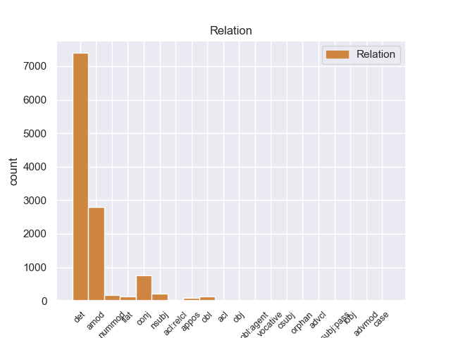
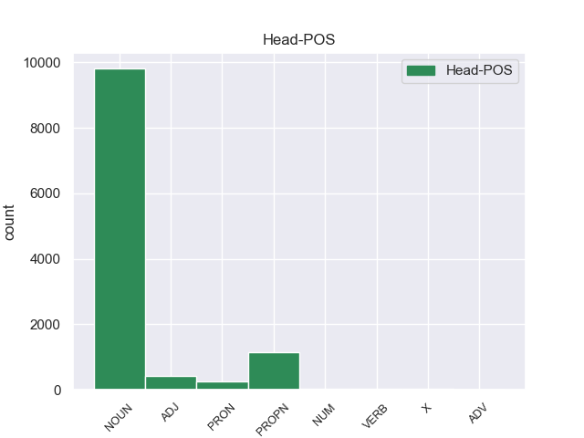
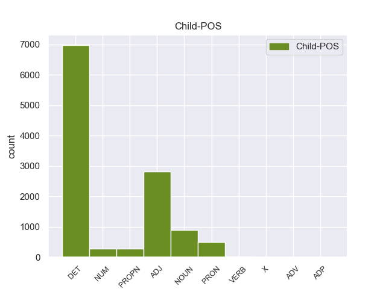

Distribution of features within this leaf



Agreement Rules sorted by frequency.
- When the dependent token is the determiner(det) of the head token, and the dependent token is DET.
1 Αυτό _ _ _ _ 0 _ _ _
2 μπορεί _ _ _ _ 0 _ _ _
3 να _ _ _ _ 0 _ _ _
4 μην _ _ _ _ 0 _ _ _
5 οδηγήσει _ _ _ _ 0 _ _ _
6 σ _ _ _ _ 0 _ _ _
7 τη _ _ _ _ 0 _ _ _
8 λήξη _ _ _ _ 0 _ _ _
9 του _ _ _ _ 0 _ _ _
10 εν _ _ _ _ 0 _ _ _
11 λόγω _ _ _ _ 0 _ _ _
12 ζητήματος _ _ _ _ 0 _ _ _
13 αλλά _ _ _ _ 0 _ _ _
14 , _ _ _ _ 0 _ _ _
15 σ _ _ _ _ 0 _ _ _
16 τη _ _ _ _ 0 _ _ _
17 μορφή _ _ _ _ 0 _ _ _
18 υπό _ _ _ _ 0 _ _ _
19 την _ _ _ _ 0 _ _ _
20 οποία _ _ _ _ 0 _ _ _
21 την _ _ _ _ 0 _ _ _
22 λάβαμε _ _ _ _ 0 _ _ _
23 , _ _ _ _ 0 _ _ _
24 αυτή _ _ _ _ 0 _ _ _
25 η _ _ _ _ 0 _ _ _
26 αίτηση _ _ _ _ 0 _ _ _
27 άρσης _ _ _ _ 0 _ _ _
28 της _ _ _ _ 0 _ _ _
29 ασυλίας _ _ _ _ 0 _ _ _
30 ήταν _ _ _ _ 0 _ _ _
31 , _ _ _ _ 0 _ _ _
32 κατά _ _ _ _ 0 _ _ _
33 την _ _ _ _ 0 _ _ _
34 άποψη _ _ _ _ 0 _ _ _
35 της _ _ _ _ 0 _ _ _
36 Επιτροπής _ _ _ _ 0 _ _ _
37 Νομικών _ _ _ _ 0 _ _ _
38 Θεμάτων _ _ _ _ 0 _ _ _
39 , _ _ _ _ 0 _ _ _
40 απαράδεκτη _ _ _ _ 0 _ _ _
41 , _ _ _ _ 0 _ _ _
42 άποψη _ _ _ _ 0 _ _ _
43 την _ _ _ _ 0 _ _ _
44 οποία _ _ _ _ 0 _ _ _
45 συνιστώ _ _ _ _ 0 _ _ _
46 σ _ _ _ _ 0 _ _ _
47 το ο DET _ Case=Acc|Gender=Neut|Number=Sing 48 det _ _
48 Σώμα σώμα NOUN _ Case=Acc|Gender=Neut|Number=Sing 0 _ _ _
49 να _ _ _ _ 0 _ _ _
50 υιοθετήσει _ _ _ _ 0 _ _ _
51 . _ _ _ _ 0 _ _ _
1 Αυτό _ _ _ _ 0 _ _ _
2 μπορεί _ _ _ _ 0 _ _ _
3 να _ _ _ _ 0 _ _ _
4 μην _ _ _ _ 0 _ _ _
5 οδηγήσει _ _ _ _ 0 _ _ _
6 σ _ _ _ _ 0 _ _ _
7 τη _ _ _ _ 0 _ _ _
8 λήξη _ _ _ _ 0 _ _ _
9 του _ _ _ _ 0 _ _ _
10 εν _ _ _ _ 0 _ _ _
11 λόγω _ _ _ _ 0 _ _ _
12 ζητήματος _ _ _ _ 0 _ _ _
13 αλλά _ _ _ _ 0 _ _ _
14 , _ _ _ _ 0 _ _ _
15 σ _ _ _ _ 0 _ _ _
16 τη _ _ _ _ 0 _ _ _
17 μορφή _ _ _ _ 0 _ _ _
18 υπό _ _ _ _ 0 _ _ _
19 την _ _ _ _ 0 _ _ _
20 οποία _ _ _ _ 0 _ _ _
21 την _ _ _ _ 0 _ _ _
22 λάβαμε _ _ _ _ 0 _ _ _
23 , _ _ _ _ 0 _ _ _
24 αυτή _ _ _ _ 0 _ _ _
25 η _ _ _ _ 0 _ _ _
26 αίτηση _ _ _ _ 0 _ _ _
27 άρσης _ _ _ _ 0 _ _ _
28 της _ _ _ _ 0 _ _ _
29 ασυλίας _ _ _ _ 0 _ _ _
30 ήταν _ _ _ _ 0 _ _ _
31 , _ _ _ _ 0 _ _ _
32 κατά _ _ _ _ 0 _ _ _
33 την _ _ _ _ 0 _ _ _
34 άποψη _ _ _ _ 0 _ _ _
35 της _ _ _ _ 0 _ _ _
36 Επιτροπής _ _ _ _ 0 _ _ _
37 Νομικών _ _ _ _ 0 _ _ _
38 Θεμάτων _ _ _ _ 0 _ _ _
39 , _ _ _ _ 0 _ _ _
40 απαράδεκτη απαράδεκτος ADJ _ Case=Nom|Gender=Fem|Number=Sing 42 amod _ _
41 , _ _ _ _ 0 _ _ _
42 άποψη άποψη NOUN _ Case=Nom|Gender=Fem|Number=Sing 0 _ _ _
43 την _ _ _ _ 0 _ _ _
44 οποία _ _ _ _ 0 _ _ _
45 συνιστώ _ _ _ _ 0 _ _ _
46 σ _ _ _ _ 0 _ _ _
47 το _ _ _ _ 0 _ _ _
48 Σώμα _ _ _ _ 0 _ _ _
49 να _ _ _ _ 0 _ _ _
50 υιοθετήσει _ _ _ _ 0 _ _ _
51 . _ _ _ _ 0 _ _ _
1 Αυτό _ _ _ _ 0 _ _ _
2 μπορεί _ _ _ _ 0 _ _ _
3 να _ _ _ _ 0 _ _ _
4 μην _ _ _ _ 0 _ _ _
5 οδηγήσει _ _ _ _ 0 _ _ _
6 σ _ _ _ _ 0 _ _ _
7 τη _ _ _ _ 0 _ _ _
8 λήξη _ _ _ _ 0 _ _ _
9 του _ _ _ _ 0 _ _ _
10 εν _ _ _ _ 0 _ _ _
11 λόγω _ _ _ _ 0 _ _ _
12 ζητήματος _ _ _ _ 0 _ _ _
13 αλλά _ _ _ _ 0 _ _ _
14 , _ _ _ _ 0 _ _ _
15 σ _ _ _ _ 0 _ _ _
16 τη _ _ _ _ 0 _ _ _
17 μορφή _ _ _ _ 0 _ _ _
18 υπό _ _ _ _ 0 _ _ _
19 την _ _ _ _ 0 _ _ _
20 οποία _ _ _ _ 0 _ _ _
21 την _ _ _ _ 0 _ _ _
22 λάβαμε _ _ _ _ 0 _ _ _
23 , _ _ _ _ 0 _ _ _
24 αυτή αυτός PRON _ Case=Nom|Gender=Fem|Number=Sing|Person=3|PronType=Dem 26 det _ _
25 η _ _ _ _ 0 _ _ _
26 αίτηση αίτηση NOUN _ Case=Nom|Gender=Fem|Number=Sing 0 _ _ _
27 άρσης _ _ _ _ 0 _ _ _
28 της _ _ _ _ 0 _ _ _
29 ασυλίας _ _ _ _ 0 _ _ _
30 ήταν _ _ _ _ 0 _ _ _
31 , _ _ _ _ 0 _ _ _
32 κατά _ _ _ _ 0 _ _ _
33 την _ _ _ _ 0 _ _ _
34 άποψη _ _ _ _ 0 _ _ _
35 της _ _ _ _ 0 _ _ _
36 Επιτροπής _ _ _ _ 0 _ _ _
37 Νομικών _ _ _ _ 0 _ _ _
38 Θεμάτων _ _ _ _ 0 _ _ _
39 , _ _ _ _ 0 _ _ _
40 απαράδεκτη _ _ _ _ 0 _ _ _
41 , _ _ _ _ 0 _ _ _
42 άποψη _ _ _ _ 0 _ _ _
43 την _ _ _ _ 0 _ _ _
44 οποία _ _ _ _ 0 _ _ _
45 συνιστώ _ _ _ _ 0 _ _ _
46 σ _ _ _ _ 0 _ _ _
47 το _ _ _ _ 0 _ _ _
48 Σώμα _ _ _ _ 0 _ _ _
49 να _ _ _ _ 0 _ _ _
50 υιοθετήσει _ _ _ _ 0 _ _ _
51 . _ _ _ _ 0 _ _ _
1 Θα _ _ _ _ 0 _ _ _
2 ήθελα _ _ _ _ 0 _ _ _
3 να _ _ _ _ 0 _ _ _
4 επιστήσω _ _ _ _ 0 _ _ _
5 την _ _ _ _ 0 _ _ _
6 προσοχή _ _ _ _ 0 _ _ _
7 όλων _ _ _ _ 0 _ _ _
8 των _ _ _ _ 0 _ _ _
9 συναδέλφων _ _ _ _ 0 _ _ _
10 σ _ _ _ _ 0 _ _ _
11 το _ _ _ _ 0 _ _ _
12 γεγονός _ _ _ _ 0 _ _ _
13 ότι _ _ _ _ 0 _ _ _
14 , _ _ _ _ 0 _ _ _
15 εάν _ _ _ _ 0 _ _ _
16 υπάρχουν _ _ _ _ 0 _ _ _
17 κάποιες _ _ _ _ 0 _ _ _
18 ελευθερίες _ _ _ _ 0 _ _ _
19 οι _ _ _ _ 0 _ _ _
20 οποίες _ _ _ _ 0 _ _ _
21 είναι _ _ _ _ 0 _ _ _
22 ζωτικής _ _ _ _ 0 _ _ _
23 σημασίας _ _ _ _ 0 _ _ _
24 για _ _ _ _ 0 _ _ _
25 την _ _ _ _ 0 _ _ _
26 άσκηση _ _ _ _ 0 _ _ _
27 του _ _ _ _ 0 _ _ _
28 λειτουργήματος _ _ _ _ 0 _ _ _
29 της _ _ _ _ 0 _ _ _
30 δημόσιας _ _ _ _ 0 _ _ _
31 εκπροσώπησης _ _ _ _ 0 _ _ _
32 , _ _ _ _ 0 _ _ _
33 ιδίως _ _ _ _ 0 _ _ _
34 για _ _ _ _ 0 _ _ _
35 ένα _ _ _ _ 0 _ _ _
36 Κοινοβούλιο _ _ _ _ 0 _ _ _
37 σαν _ _ _ _ 0 _ _ _
38 το _ _ _ _ 0 _ _ _
39 δικό _ _ _ _ 0 _ _ _
40 μας _ _ _ _ 0 _ _ _
41 , _ _ _ _ 0 _ _ _
42 η _ _ _ _ 0 _ _ _
43 ελευθερία _ _ _ _ 0 _ _ _
44 της _ _ _ _ 0 _ _ _
45 επικοινωνίας _ _ _ _ 0 _ _ _
46 με _ _ _ _ 0 _ _ _
47 άλλους _ _ _ _ 0 _ _ _
48 πολίτες _ _ _ _ 0 _ _ _
49 και _ _ _ _ 0 _ _ _
50 με _ _ _ _ 0 _ _ _
51 τους _ _ _ _ 0 _ _ _
52 πολίτες _ _ _ _ 0 _ _ _
53 τρίτων _ _ _ _ 0 _ _ _
54 χωρών _ _ _ _ 0 _ _ _
55 , _ _ _ _ 0 _ _ _
56 καθώς _ _ _ _ 0 _ _ _
57 και _ _ _ _ 0 _ _ _
58 η _ _ _ _ 0 _ _ _
59 ελευθερία ελευθερία NOUN _ Case=Nom|Gender=Fem|Number=Sing 63 conj _ _
60 μετακίνησης _ _ _ _ 0 _ _ _
61 , _ _ _ _ 0 _ _ _
62 είναι _ _ _ _ 0 _ _ _
63 κρίσιμες κρίσιμός ADJ _ Case=Nom|Gender=Fem|Number=Plur 0 _ _ _
64 για _ _ _ _ 0 _ _ _
65 τη _ _ _ _ 0 _ _ _
66 διεκπεραίωση _ _ _ _ 0 _ _ _
67 του _ _ _ _ 0 _ _ _
68 έργου _ _ _ _ 0 _ _ _
69 μας _ _ _ _ 0 _ _ _
70 . _ _ _ _ 0 _ _ _
1 Επίσης _ _ _ _ 0 _ _ _
2 ο _ _ _ _ 0 _ _ _
3 Βενιαμίν Βενιαμίν PROPN _ Case=Nom|Gender=Masc|Number=Sing 0 _ _ _
4 Νετανιάχου Νετανιάχου PROPN _ Case=Nom|Gender=Masc|Number=Sing 3 flat _ _
5 εξέφρασε _ _ _ _ 0 _ _ _
6 ικανοποίηση _ _ _ _ 0 _ _ _
7 για _ _ _ _ 0 _ _ _
8 την _ _ _ _ 0 _ _ _
9 θέση _ _ _ _ 0 _ _ _
10 του _ _ _ _ 0 _ _ _
11 Αμερικανού _ _ _ _ 0 _ _ _
12 Προέδρου _ _ _ _ 0 _ _ _
13 ότι _ _ _ _ 0 _ _ _
14 « _ _ _ _ 0 _ _ _
15 το _ _ _ _ 0 _ _ _
16 Ισραήλ _ _ _ _ 0 _ _ _
17 θα _ _ _ _ 0 _ _ _
18 πρέπει _ _ _ _ 0 _ _ _
19 να _ _ _ _ 0 _ _ _
20 μπορεί _ _ _ _ 0 _ _ _
21 να _ _ _ _ 0 _ _ _
22 αμυνθεί _ _ _ _ 0 _ _ _
23 ενάντια _ _ _ _ 0 _ _ _
24 σε _ _ _ _ 0 _ _ _
25 οποιαδήποτε _ _ _ _ 0 _ _ _
26 απειλή _ _ _ _ 0 _ _ _
27 » _ _ _ _ 0 _ _ _
28 . _ _ _ _ 0 _ _ _
1 Πρώην _ _ _ _ 0 _ _ _
2 Υπουργός _ _ _ _ 0 _ _ _
3 της _ _ _ _ 0 _ _ _
4 Κυβέρνησης _ _ _ _ 0 _ _ _
5 του _ _ _ _ 0 _ _ _
6 Χοσέ _ _ _ _ 0 _ _ _
7 Μαρία _ _ _ _ 0 _ _ _
8 Αθνάρ _ _ _ _ 0 _ _ _
9 , _ _ _ _ 0 _ _ _
10 σ _ _ _ _ 0 _ _ _
11 την _ _ _ _ 0 _ _ _
12 Ισπανία _ _ _ _ 0 _ _ _
13 , _ _ _ _ 0 _ _ _
14 καταδικάστηκε _ _ _ _ 0 _ _ _
15 σε _ _ _ _ 0 _ _ _
16 έξι έξι NUM _ Case=Acc|Gender=Neut|Number=Plur|NumType=Card 17 nummod _ _
17 έτη έτο NOUN _ Case=Acc|Gender=Neut|Number=Plur 0 _ _ _
18 κάθειρξης _ _ _ _ 0 _ _ _
19 για _ _ _ _ 0 _ _ _
20 ένα _ _ _ _ 0 _ _ _
21 πολύ _ _ _ _ 0 _ _ _
22 μεγάλο _ _ _ _ 0 _ _ _
23 σκάνδαλο _ _ _ _ 0 _ _ _
24 διαφθοράς _ _ _ _ 0 _ _ _
25 . _ _ _ _ 0 _ _ _
1 Θα _ _ _ _ 0 _ _ _
2 ήθελα _ _ _ _ 0 _ _ _
3 να _ _ _ _ 0 _ _ _
4 επιστήσω _ _ _ _ 0 _ _ _
5 την _ _ _ _ 0 _ _ _
6 προσοχή _ _ _ _ 0 _ _ _
7 όλων _ _ _ _ 0 _ _ _
8 των _ _ _ _ 0 _ _ _
9 συναδέλφων _ _ _ _ 0 _ _ _
10 σ _ _ _ _ 0 _ _ _
11 το _ _ _ _ 0 _ _ _
12 γεγονός _ _ _ _ 0 _ _ _
13 ότι _ _ _ _ 0 _ _ _
14 , _ _ _ _ 0 _ _ _
15 εάν _ _ _ _ 0 _ _ _
16 υπάρχουν _ _ _ _ 0 _ _ _
17 κάποιες _ _ _ _ 0 _ _ _
18 ελευθερίες _ _ _ _ 0 _ _ _
19 οι _ _ _ _ 0 _ _ _
20 οποίες _ _ _ _ 0 _ _ _
21 είναι _ _ _ _ 0 _ _ _
22 ζωτικής _ _ _ _ 0 _ _ _
23 σημασίας _ _ _ _ 0 _ _ _
24 για _ _ _ _ 0 _ _ _
25 την _ _ _ _ 0 _ _ _
26 άσκηση _ _ _ _ 0 _ _ _
27 του _ _ _ _ 0 _ _ _
28 λειτουργήματος _ _ _ _ 0 _ _ _
29 της _ _ _ _ 0 _ _ _
30 δημόσιας _ _ _ _ 0 _ _ _
31 εκπροσώπησης _ _ _ _ 0 _ _ _
32 , _ _ _ _ 0 _ _ _
33 ιδίως _ _ _ _ 0 _ _ _
34 για _ _ _ _ 0 _ _ _
35 ένα _ _ _ _ 0 _ _ _
36 Κοινοβούλιο _ _ _ _ 0 _ _ _
37 σαν _ _ _ _ 0 _ _ _
38 το _ _ _ _ 0 _ _ _
39 δικό _ _ _ _ 0 _ _ _
40 μας _ _ _ _ 0 _ _ _
41 , _ _ _ _ 0 _ _ _
42 η _ _ _ _ 0 _ _ _
43 ελευθερία ελευθερία NOUN _ Case=Nom|Gender=Fem|Number=Sing 63 nsubj _ _
44 της _ _ _ _ 0 _ _ _
45 επικοινωνίας _ _ _ _ 0 _ _ _
46 με _ _ _ _ 0 _ _ _
47 άλλους _ _ _ _ 0 _ _ _
48 πολίτες _ _ _ _ 0 _ _ _
49 και _ _ _ _ 0 _ _ _
50 με _ _ _ _ 0 _ _ _
51 τους _ _ _ _ 0 _ _ _
52 πολίτες _ _ _ _ 0 _ _ _
53 τρίτων _ _ _ _ 0 _ _ _
54 χωρών _ _ _ _ 0 _ _ _
55 , _ _ _ _ 0 _ _ _
56 καθώς _ _ _ _ 0 _ _ _
57 και _ _ _ _ 0 _ _ _
58 η _ _ _ _ 0 _ _ _
59 ελευθερία _ _ _ _ 0 _ _ _
60 μετακίνησης _ _ _ _ 0 _ _ _
61 , _ _ _ _ 0 _ _ _
62 είναι _ _ _ _ 0 _ _ _
63 κρίσιμες κρίσιμός ADJ _ Case=Nom|Gender=Fem|Number=Plur 0 _ _ _
64 για _ _ _ _ 0 _ _ _
65 τη _ _ _ _ 0 _ _ _
66 διεκπεραίωση _ _ _ _ 0 _ _ _
67 του _ _ _ _ 0 _ _ _
68 έργου _ _ _ _ 0 _ _ _
69 μας _ _ _ _ 0 _ _ _
70 . _ _ _ _ 0 _ _ _
1 Θα _ _ _ _ 0 _ _ _
2 ήθελα _ _ _ _ 0 _ _ _
3 να _ _ _ _ 0 _ _ _
4 επιστήσω _ _ _ _ 0 _ _ _
5 την _ _ _ _ 0 _ _ _
6 προσοχή _ _ _ _ 0 _ _ _
7 όλων _ _ _ _ 0 _ _ _
8 των _ _ _ _ 0 _ _ _
9 συναδέλφων _ _ _ _ 0 _ _ _
10 σ _ _ _ _ 0 _ _ _
11 το _ _ _ _ 0 _ _ _
12 γεγονός _ _ _ _ 0 _ _ _
13 ότι _ _ _ _ 0 _ _ _
14 , _ _ _ _ 0 _ _ _
15 εάν _ _ _ _ 0 _ _ _
16 υπάρχουν _ _ _ _ 0 _ _ _
17 κάποιες _ _ _ _ 0 _ _ _
18 ελευθερίες _ _ _ _ 0 _ _ _
19 οι _ _ _ _ 0 _ _ _
20 οποίες _ _ _ _ 0 _ _ _
21 είναι _ _ _ _ 0 _ _ _
22 ζωτικής _ _ _ _ 0 _ _ _
23 σημασίας _ _ _ _ 0 _ _ _
24 για _ _ _ _ 0 _ _ _
25 την _ _ _ _ 0 _ _ _
26 άσκηση _ _ _ _ 0 _ _ _
27 του _ _ _ _ 0 _ _ _
28 λειτουργήματος _ _ _ _ 0 _ _ _
29 της _ _ _ _ 0 _ _ _
30 δημόσιας _ _ _ _ 0 _ _ _
31 εκπροσώπησης _ _ _ _ 0 _ _ _
32 , _ _ _ _ 0 _ _ _
33 ιδίως _ _ _ _ 0 _ _ _
34 για _ _ _ _ 0 _ _ _
35 ένα _ _ _ _ 0 _ _ _
36 Κοινοβούλιο _ _ _ _ 0 _ _ _
37 σαν _ _ _ _ 0 _ _ _
38 το _ _ _ _ 0 _ _ _
39 δικό _ _ _ _ 0 _ _ _
40 μας _ _ _ _ 0 _ _ _
41 , _ _ _ _ 0 _ _ _
42 η _ _ _ _ 0 _ _ _
43 ελευθερία _ _ _ _ 0 _ _ _
44 της _ _ _ _ 0 _ _ _
45 επικοινωνίας _ _ _ _ 0 _ _ _
46 με _ _ _ _ 0 _ _ _
47 άλλους _ _ _ _ 0 _ _ _
48 πολίτες _ _ _ _ 0 _ _ _
49 και _ _ _ _ 0 _ _ _
50 με _ _ _ _ 0 _ _ _
51 τους _ _ _ _ 0 _ _ _
52 πολίτες _ _ _ _ 0 _ _ _
53 τρίτων τρίτος NUM _ Case=Gen|Gender=Fem|Number=Plur 54 amod _ _
54 χωρών χώρα NOUN _ Case=Gen|Gender=Fem|Number=Plur 0 _ _ _
55 , _ _ _ _ 0 _ _ _
56 καθώς _ _ _ _ 0 _ _ _
57 και _ _ _ _ 0 _ _ _
58 η _ _ _ _ 0 _ _ _
59 ελευθερία _ _ _ _ 0 _ _ _
60 μετακίνησης _ _ _ _ 0 _ _ _
61 , _ _ _ _ 0 _ _ _
62 είναι _ _ _ _ 0 _ _ _
63 κρίσιμες _ _ _ _ 0 _ _ _
64 για _ _ _ _ 0 _ _ _
65 τη _ _ _ _ 0 _ _ _
66 διεκπεραίωση _ _ _ _ 0 _ _ _
67 του _ _ _ _ 0 _ _ _
68 έργου _ _ _ _ 0 _ _ _
69 μας _ _ _ _ 0 _ _ _
70 . _ _ _ _ 0 _ _ _
1 Τα _ _ _ _ 0 _ _ _
2 καταπράσινα _ _ _ _ 0 _ _ _
3 νησάκια _ _ _ _ 0 _ _ _
4 Άγιος _ _ _ _ 0 _ _ _
5 Νικόλαος Νικόλαος PROPN _ Case=Nom|Gender=Masc|Number=Sing 0 _ _ _
6 και _ _ _ _ 0 _ _ _
7 Μαύρον _ _ _ _ 0 _ _ _
8 Όρος όρος PROPN _ Case=Nom|Gender=Masc|Number=Sing 5 conj _ _
9 - _ _ _ _ 0 _ _ _
10 όπου _ _ _ _ 0 _ _ _
11 και _ _ _ _ 0 _ _ _
12 χτίστηκε _ _ _ _ 0 _ _ _
13 το _ _ _ _ 0 _ _ _
14 1884 _ _ _ _ 0 _ _ _
15 φάρος _ _ _ _ 0 _ _ _
16 για _ _ _ _ 0 _ _ _
17 τη _ _ _ _ 0 _ _ _
18 διευκόλυνση _ _ _ _ 0 _ _ _
19 της _ _ _ _ 0 _ _ _
20 ακτοπλοΐας _ _ _ _ 0 _ _ _
21 - _ _ _ _ 0 _ _ _
22 που _ _ _ _ 0 _ _ _
23 περιστοιχίζουν _ _ _ _ 0 _ _ _
24 το _ _ _ _ 0 _ _ _
25 χωριό _ _ _ _ 0 _ _ _
26 είναι _ _ _ _ 0 _ _ _
27 προσβάσιμα _ _ _ _ 0 _ _ _
28 με _ _ _ _ 0 _ _ _
29 βάρκα _ _ _ _ 0 _ _ _
30 ενώ _ _ _ _ 0 _ _ _
31 οι _ _ _ _ 0 _ _ _
32 παραλίες _ _ _ _ 0 _ _ _
33 που _ _ _ _ 0 _ _ _
34 προσφέρονται _ _ _ _ 0 _ _ _
35 για _ _ _ _ 0 _ _ _
36 κολύμπι _ _ _ _ 0 _ _ _
37 είναι _ _ _ _ 0 _ _ _
38 πολλές _ _ _ _ 0 _ _ _
39 και _ _ _ _ 0 _ _ _
40 πεντακάθαρες _ _ _ _ 0 _ _ _
41 : _ _ _ _ 0 _ _ _
1 Η _ _ _ _ 0 _ _ _
2 Μπενφίκα _ _ _ _ 0 _ _ _
3 ήταν _ _ _ _ 0 _ _ _
4 πιο _ _ _ _ 0 _ _ _
5 επιθετική επιθετικός ADJ _ Case=Nom|Gender=Fem|Number=Sing 0 _ _ _
6 και _ _ _ _ 0 _ _ _
7 καλύτερη καλύτερος ADJ _ Case=Nom|Gender=Fem|Number=Sing 5 conj _ _
8 σ _ _ _ _ 0 _ _ _
9 το _ _ _ _ 0 _ _ _
10 πρώτο _ _ _ _ 0 _ _ _
11 ημίχρονο _ _ _ _ 0 _ _ _
12 , _ _ _ _ 0 _ _ _
13 με _ _ _ _ 0 _ _ _
14 αποτέλεσμα _ _ _ _ 0 _ _ _
15 να _ _ _ _ 0 _ _ _
16 ανοίξει _ _ _ _ 0 _ _ _
17 το _ _ _ _ 0 _ _ _
18 σκορ _ _ _ _ 0 _ _ _
19 σ _ _ _ _ 0 _ _ _
20 το _ _ _ _ 0 _ _ _
21 πρώτο _ _ _ _ 0 _ _ _
22 λεπτό _ _ _ _ 0 _ _ _
23 των _ _ _ _ 0 _ _ _
24 καθυστερήσεων _ _ _ _ 0 _ _ _
25 , _ _ _ _ 0 _ _ _
26 χάρη _ _ _ _ 0 _ _ _
27 σ _ _ _ _ 0 _ _ _
28 τον _ _ _ _ 0 _ _ _
29 Μάξι _ _ _ _ 0 _ _ _
30 Περέιρα _ _ _ _ 0 _ _ _
31 . _ _ _ _ 0 _ _ _
1 Αυτό _ _ _ _ 0 _ _ _
2 μπορεί _ _ _ _ 0 _ _ _
3 να _ _ _ _ 0 _ _ _
4 μην _ _ _ _ 0 _ _ _
5 οδηγήσει _ _ _ _ 0 _ _ _
6 σ _ _ _ _ 0 _ _ _
7 τη _ _ _ _ 0 _ _ _
8 λήξη _ _ _ _ 0 _ _ _
9 του _ _ _ _ 0 _ _ _
10 εν _ _ _ _ 0 _ _ _
11 λόγω _ _ _ _ 0 _ _ _
12 ζητήματος _ _ _ _ 0 _ _ _
13 αλλά _ _ _ _ 0 _ _ _
14 , _ _ _ _ 0 _ _ _
15 σ _ _ _ _ 0 _ _ _
16 τη _ _ _ _ 0 _ _ _
17 μορφή _ _ _ _ 0 _ _ _
18 υπό _ _ _ _ 0 _ _ _
19 την _ _ _ _ 0 _ _ _
20 οποία _ _ _ _ 0 _ _ _
21 την _ _ _ _ 0 _ _ _
22 λάβαμε _ _ _ _ 0 _ _ _
23 , _ _ _ _ 0 _ _ _
24 αυτή _ _ _ _ 0 _ _ _
25 η _ _ _ _ 0 _ _ _
26 αίτηση _ _ _ _ 0 _ _ _
27 άρσης _ _ _ _ 0 _ _ _
28 της _ _ _ _ 0 _ _ _
29 ασυλίας _ _ _ _ 0 _ _ _
30 ήταν _ _ _ _ 0 _ _ _
31 , _ _ _ _ 0 _ _ _
32 κατά _ _ _ _ 0 _ _ _
33 την _ _ _ _ 0 _ _ _
34 άποψη άποψη NOUN _ Case=Acc|Gender=Fem|Number=Sing 40 obl _ _
35 της _ _ _ _ 0 _ _ _
36 Επιτροπής _ _ _ _ 0 _ _ _
37 Νομικών _ _ _ _ 0 _ _ _
38 Θεμάτων _ _ _ _ 0 _ _ _
39 , _ _ _ _ 0 _ _ _
40 απαράδεκτη απαράδεκτος ADJ _ Case=Nom|Gender=Fem|Number=Sing 0 _ _ _
41 , _ _ _ _ 0 _ _ _
42 άποψη _ _ _ _ 0 _ _ _
43 την _ _ _ _ 0 _ _ _
44 οποία _ _ _ _ 0 _ _ _
45 συνιστώ _ _ _ _ 0 _ _ _
46 σ _ _ _ _ 0 _ _ _
47 το _ _ _ _ 0 _ _ _
48 Σώμα _ _ _ _ 0 _ _ _
49 να _ _ _ _ 0 _ _ _
50 υιοθετήσει _ _ _ _ 0 _ _ _
51 . _ _ _ _ 0 _ _ _
1 Αυτή αυτός PRON _ Case=Nom|Gender=Fem|Number=Sing|Person=3|PronType=Dem 4 nsubj _ _
2 είναι _ _ _ _ 0 _ _ _
3 η _ _ _ _ 0 _ _ _
4 κατάσταση κατάσταση NOUN _ Case=Nom|Gender=Fem|Number=Sing 0 _ _ _
5 επί _ _ _ _ 0 _ _ _
6 της _ _ _ _ 0 _ _ _
7 οποίας _ _ _ _ 0 _ _ _
8 πρέπει _ _ _ _ 0 _ _ _
9 να _ _ _ _ 0 _ _ _
10 αποφασίσουμε _ _ _ _ 0 _ _ _
11 . _ _ _ _ 0 _ _ _
1 Από _ _ _ _ 0 _ _ _
2 τη _ _ _ _ 0 _ _ _
3 πλευρά _ _ _ _ 0 _ _ _
4 του _ _ _ _ 0 _ _ _
5 ο _ _ _ _ 0 _ _ _
6 Πρωθυπουργός πρωθυπουργός NOUN _ Case=Nom|Gender=Masc|Number=Sing 0 _ _ _
7 του _ _ _ _ 0 _ _ _
8 Ισραήλ _ _ _ _ 0 _ _ _
9 , _ _ _ _ 0 _ _ _
10 Βενιαμίν Βενιαμίν PROPN _ Case=Nom|Gender=Masc|Number=Sing 6 appos _ _
11 Νετανιάχου _ _ _ _ 0 _ _ _
12 , _ _ _ _ 0 _ _ _
13 εξέφρασε _ _ _ _ 0 _ _ _
14 ικανοποίηση _ _ _ _ 0 _ _ _
15 για _ _ _ _ 0 _ _ _
16 το _ _ _ _ 0 _ _ _
17 σχόλιο _ _ _ _ 0 _ _ _
18 του _ _ _ _ 0 _ _ _
19 Μπαράκ _ _ _ _ 0 _ _ _
20 Ομπάμα _ _ _ _ 0 _ _ _
21 ότι _ _ _ _ 0 _ _ _
22 « _ _ _ _ 0 _ _ _
23 θα _ _ _ _ 0 _ _ _
24 εξεταστούν _ _ _ _ 0 _ _ _
25 όλες _ _ _ _ 0 _ _ _
26 οι _ _ _ _ 0 _ _ _
27 εναλλακτικές _ _ _ _ 0 _ _ _
28 λύσεις _ _ _ _ 0 _ _ _
29 αναφορικά _ _ _ _ 0 _ _ _
30 με _ _ _ _ 0 _ _ _
31 το _ _ _ _ 0 _ _ _
32 πυρηνικό _ _ _ _ 0 _ _ _
33 πρόγραμμα _ _ _ _ 0 _ _ _
34 του _ _ _ _ 0 _ _ _
35 Ιράν _ _ _ _ 0 _ _ _
36 » _ _ _ _ 0 _ _ _
37 . _ _ _ _ 0 _ _ _
1 Το _ _ _ _ 0 _ _ _
2 κέντρο _ _ _ _ 0 _ _ _
3 ζωής _ _ _ _ 0 _ _ _
4 της _ _ _ _ 0 _ _ _
5 πόλης _ _ _ _ 0 _ _ _
6 βρίσκεται _ _ _ _ 0 _ _ _
7 απέναντι _ _ _ _ 0 _ _ _
8 από _ _ _ _ 0 _ _ _
9 το _ _ _ _ 0 _ _ _
10 Παλιό _ _ _ _ 0 _ _ _
11 Φρούριο _ _ _ _ 0 _ _ _
12 , _ _ _ _ 0 _ _ _
13 σ _ _ _ _ 0 _ _ _
14 την _ _ _ _ 0 _ _ _
15 πλατεία πλατεία NOUN _ Case=Acc|Gender=Fem|Number=Sing 0 _ _ _
16 Σπιανάδα _ _ _ _ 0 _ _ _
17 , _ _ _ _ 0 _ _ _
18 τη _ _ _ _ 0 _ _ _
19 μεγαλύτερη _ _ _ _ 0 _ _ _
20 πλατεία πλατεία NOUN _ Case=Acc|Gender=Fem|Number=Sing 15 appos _ _
21 των _ _ _ _ 0 _ _ _
22 Βαλκανίων _ _ _ _ 0 _ _ _
23 με _ _ _ _ 0 _ _ _
24 εντυπωσιακά _ _ _ _ 0 _ _ _
25 βενετσιάνικα _ _ _ _ 0 _ _ _
26 σιντριβάνια _ _ _ _ 0 _ _ _
27 . _ _ _ _ 0 _ _ _
1 Παρόμοιο _ _ _ _ 0 _ _ _
2 καθεστώς _ _ _ _ 0 _ _ _
3 επιδιώκουν _ _ _ _ 0 _ _ _
4 και _ _ _ _ 0 _ _ _
5 οι _ _ _ _ 0 _ _ _
6 πόλεις πόλεα NOUN _ Case=Nom|Gender=Fem|Number=Plur 0 _ _ _
7 σ _ _ _ _ 0 _ _ _
8 τα _ _ _ _ 0 _ _ _
9 ανατολικά _ _ _ _ 0 _ _ _
10 της _ _ _ _ 0 _ _ _
11 Λιβύης _ _ _ _ 0 _ _ _
12 , _ _ _ _ 0 _ _ _
13 οι _ _ _ _ 0 _ _ _
14 οποίες _ _ _ _ 0 _ _ _
15 είναι _ _ _ _ 0 _ _ _
16 πλούσιες πλούσιος ADJ _ Case=Nom|Gender=Fem|Number=Plur 6 acl:relcl _ _
17 σε _ _ _ _ 0 _ _ _
18 κοιτάσματα _ _ _ _ 0 _ _ _
19 πετρελαίου _ _ _ _ 0 _ _ _
20 . _ _ _ _ 0 _ _ _
1 Η _ _ _ _ 0 _ _ _
2 Γαλλία _ _ _ _ 0 _ _ _
3 δήλωσε _ _ _ _ 0 _ _ _
4 ότι _ _ _ _ 0 _ _ _
5 « _ _ _ _ 0 _ _ _
6 ο _ _ _ _ 0 _ _ _
7 αλ _ _ _ _ 0 _ _ _
8 Σενούσι _ _ _ _ 0 _ _ _
9 έχει _ _ _ _ 0 _ _ _
10 συλληφθεί _ _ _ _ 0 _ _ _
11 μετά _ _ _ _ 0 _ _ _
12 από _ _ _ _ 0 _ _ _
13 συνεργασία _ _ _ _ 0 _ _ _
14 Γάλλων _ _ _ _ 0 _ _ _
15 και _ _ _ _ 0 _ _ _
16 Μαυριτανών μαυριτανός PROPN _ Case=Gen|Gender=Masc|Number=Plur 17 amod _ _
17 πρακτόρων πρακτίτης NOUN _ Case=Gen|Gender=Masc|Number=Plur 0 _ _ _
18 . _ _ _ _ 0 _ _ _
1 Ο _ _ _ _ 0 _ _ _
2 Χάουμε Χάουμε X _ Case=Nom|Gender=Masc|Number=Sing 0 _ _ _
3 Μάτας Μάτας X _ Case=Nom|Gender=Masc|Number=Sing 2 flat _ _
4 είχε _ _ _ _ 0 _ _ _
5 λάβει _ _ _ _ 0 _ _ _
6 παρανόμως _ _ _ _ 0 _ _ _
7 500.000 _ _ _ _ 0 _ _ _
8 ευρώ _ _ _ _ 0 _ _ _
9 ( _ _ _ _ 0 _ _ _
10 δημόσια _ _ _ _ 0 _ _ _
11 χρήματα _ _ _ _ 0 _ _ _
12 ) _ _ _ _ 0 _ _ _
13 , _ _ _ _ 0 _ _ _
14 για _ _ _ _ 0 _ _ _
15 να _ _ _ _ 0 _ _ _
16 πληρώσει _ _ _ _ 0 _ _ _
17 δημοσιογράφο _ _ _ _ 0 _ _ _
18 που _ _ _ _ 0 _ _ _
19 έγραφε _ _ _ _ 0 _ _ _
20 τις _ _ _ _ 0 _ _ _
21 ομιλίες _ _ _ _ 0 _ _ _
22 του _ _ _ _ 0 _ _ _
23 . _ _ _ _ 0 _ _ _
1 Αντί _ _ _ _ 0 _ _ _
2 να _ _ _ _ 0 _ _ _
3 επικεντρώνονται _ _ _ _ 0 _ _ _
4 οι _ _ _ _ 0 _ _ _
5 προσπάθειες _ _ _ _ 0 _ _ _
6 σ _ _ _ _ 0 _ _ _
7 τη _ _ _ _ 0 _ _ _
8 διαχείριση _ _ _ _ 0 _ _ _
9 της _ _ _ _ 0 _ _ _
10 ανεργίας _ _ _ _ 0 _ _ _
11 , _ _ _ _ 0 _ _ _
12 θα _ _ _ _ 0 _ _ _
13 πρέπει _ _ _ _ 0 _ _ _
14 να _ _ _ _ 0 _ _ _
15 αυξηθεί _ _ _ _ 0 _ _ _
16 η _ _ _ _ 0 _ _ _
17 ικανότητα _ _ _ _ 0 _ _ _
18 προς _ _ _ _ 0 _ _ _
19 εργασία _ _ _ _ 0 _ _ _
20 με _ _ _ _ 0 _ _ _
21 τη _ _ _ _ 0 _ _ _
22 λήψη _ _ _ _ 0 _ _ _
23 μέτρων _ _ _ _ 0 _ _ _
24 για _ _ _ _ 0 _ _ _
25 την _ _ _ _ 0 _ _ _
26 απόκτηση _ _ _ _ 0 _ _ _
27 προσόντων _ _ _ _ 0 _ _ _
28 , _ _ _ _ 0 _ _ _
29 με _ _ _ _ 0 _ _ _
30 την _ _ _ _ 0 _ _ _
31 προσανατολισμένη προσανατολισμένος VERB _ Case=Acc|Gender=Fem|Number=Sing 35 amod _ _
32 σ _ _ _ _ 0 _ _ _
33 την _ _ _ _ 0 _ _ _
34 αγορά _ _ _ _ 0 _ _ _
35 επιμόρφωση επιμόρφωση NOUN _ Case=Nom|Gender=Fem|Number=Sing 0 _ _ _
36 και _ _ _ _ 0 _ _ _
37 με _ _ _ _ 0 _ _ _
38 συνδέσεις _ _ _ _ 0 _ _ _
39 σ _ _ _ _ 0 _ _ _
40 το _ _ _ _ 0 _ _ _
41 Διαδίκτυο _ _ _ _ 0 _ _ _
42 . _ _ _ _ 0 _ _ _
1 Εν _ _ _ _ 0 _ _ _
2 γνώσει _ _ _ _ 0 _ _ _
3 τους _ _ _ _ 0 _ _ _
4 βεβαίως _ _ _ _ 0 _ _ _
5 πως _ _ _ _ 0 _ _ _
6 όλοι _ _ _ _ 0 _ _ _
7 οι _ _ _ _ 0 _ _ _
8 παραπάνω _ _ _ _ 0 _ _ _
9 λαοί _ _ _ _ 0 _ _ _
10 μπορούσαν _ _ _ _ 0 _ _ _
11 να _ _ _ _ 0 _ _ _
12 προβάλουν _ _ _ _ 0 _ _ _
13 αξιώσεις αξιώσεα NOUN _ Case=Acc|Gender=Fem|Number=Plur 0 _ _ _
14 βασισμένες βασισμένος VERB _ Case=Nom|Gender=Fem|Number=Plur 13 acl _ _
15 σε _ _ _ _ 0 _ _ _
16 ιστορικούς _ _ _ _ 0 _ _ _
17 , _ _ _ _ 0 _ _ _
18 ή _ _ _ _ 0 _ _ _
19 θρησκευτικούς _ _ _ _ 0 _ _ _
20 , _ _ _ _ 0 _ _ _
21 ή _ _ _ _ 0 _ _ _
22 πολιτιστικούς _ _ _ _ 0 _ _ _
23 , _ _ _ _ 0 _ _ _
24 ή _ _ _ _ 0 _ _ _
25 και _ _ _ _ 0 _ _ _
26 πληθυσμιακούς _ _ _ _ 0 _ _ _
27 λόγους _ _ _ _ 0 _ _ _
28 , _ _ _ _ 0 _ _ _
29 είτε _ _ _ _ 0 _ _ _
30 για _ _ _ _ 0 _ _ _
31 ολόκληρη _ _ _ _ 0 _ _ _
32 τη _ _ _ _ 0 _ _ _
33 Μακεδονία _ _ _ _ 0 _ _ _
34 είτε _ _ _ _ 0 _ _ _
35 κατά _ _ _ _ 0 _ _ _
36 εκτεταμένα _ _ _ _ 0 _ _ _
37 τμήματά _ _ _ _ 0 _ _ _
38 της _ _ _ _ 0 _ _ _
39 . _ _ _ _ 0 _ _ _
1 Η _ _ _ _ 0 _ _ _
2 Μπενφίκα Μπενφίκα PROPN _ Case=Nom|Gender=Fem|Number=Sing 5 nsubj _ _
3 ήταν _ _ _ _ 0 _ _ _
4 πιο _ _ _ _ 0 _ _ _
5 επιθετική επιθετικός ADJ _ Case=Nom|Gender=Fem|Number=Sing 0 _ _ _
6 και _ _ _ _ 0 _ _ _
7 καλύτερη _ _ _ _ 0 _ _ _
8 σ _ _ _ _ 0 _ _ _
9 το _ _ _ _ 0 _ _ _
10 πρώτο _ _ _ _ 0 _ _ _
11 ημίχρονο _ _ _ _ 0 _ _ _
12 , _ _ _ _ 0 _ _ _
13 με _ _ _ _ 0 _ _ _
14 αποτέλεσμα _ _ _ _ 0 _ _ _
15 να _ _ _ _ 0 _ _ _
16 ανοίξει _ _ _ _ 0 _ _ _
17 το _ _ _ _ 0 _ _ _
18 σκορ _ _ _ _ 0 _ _ _
19 σ _ _ _ _ 0 _ _ _
20 το _ _ _ _ 0 _ _ _
21 πρώτο _ _ _ _ 0 _ _ _
22 λεπτό _ _ _ _ 0 _ _ _
23 των _ _ _ _ 0 _ _ _
24 καθυστερήσεων _ _ _ _ 0 _ _ _
25 , _ _ _ _ 0 _ _ _
26 χάρη _ _ _ _ 0 _ _ _
27 σ _ _ _ _ 0 _ _ _
28 τον _ _ _ _ 0 _ _ _
29 Μάξι _ _ _ _ 0 _ _ _
30 Περέιρα _ _ _ _ 0 _ _ _
31 . _ _ _ _ 0 _ _ _
1 Όλοι όλος ADJ _ Case=Nom|Gender=Masc|Number=Plur 3 det _ _
2 οι _ _ _ _ 0 _ _ _
3 κρατούμενοι κρατούμενος NOUN _ Case=Nom|Gender=Masc|Number=Plur 0 _ _ _
4 φέρονται _ _ _ _ 0 _ _ _
5 ως _ _ _ _ 0 _ _ _
6 μέλη _ _ _ _ 0 _ _ _
7 της _ _ _ _ 0 _ _ _
8 Αλ _ _ _ _ 0 _ _ _
9 Κάιντα _ _ _ _ 0 _ _ _
10 , _ _ _ _ 0 _ _ _
11 ενώ _ _ _ _ 0 _ _ _
12 δύο _ _ _ _ 0 _ _ _
13 απ' _ _ _ _ 0 _ _ _
14 αυτούς _ _ _ _ 0 _ _ _
15 είναι _ _ _ _ 0 _ _ _
16 θανατοποινίτες _ _ _ _ 0 _ _ _
17 . _ _ _ _ 0 _ _ _
1 Επιτυχία _ _ _ _ 0 _ _ _
2 επίσης _ _ _ _ 0 _ _ _
3 , _ _ _ _ 0 _ _ _
4 και _ _ _ _ 0 _ _ _
5 αυτή _ _ _ _ 0 _ _ _
6 τη _ _ _ _ 0 _ _ _
7 φορά _ _ _ _ 0 _ _ _
8 μπορούμε _ _ _ _ 0 _ _ _
9 να _ _ _ _ 0 _ _ _
10 το _ _ _ _ 0 _ _ _
11 πούμε _ _ _ _ 0 _ _ _
12 , _ _ _ _ 0 _ _ _
13 της _ _ _ _ 0 _ _ _
14 Επιτροπής _ _ _ _ 0 _ _ _
15 , _ _ _ _ 0 _ _ _
16 η _ _ _ _ 0 _ _ _
17 οποία _ _ _ _ 0 _ _ _
18 ήταν _ _ _ _ 0 _ _ _
19 υπεύθυνη _ _ _ _ 0 _ _ _
20 για _ _ _ _ 0 _ _ _
21 το _ _ _ _ 0 _ _ _
22 εγχείρημα _ _ _ _ 0 _ _ _
23 , _ _ _ _ 0 _ _ _
24 του _ _ _ _ 0 _ _ _
25 Προέδρου προέδ NOUN _ Case=Gen|Gender=Masc|Number=Sing 0 _ _ _
26 Πρόντι _ _ _ _ 0 _ _ _
27 , _ _ _ _ 0 _ _ _
28 ο _ _ _ _ 0 _ _ _
29 οποίος _ _ _ _ 0 _ _ _
30 , _ _ _ _ 0 _ _ _
31 όταν _ _ _ _ 0 _ _ _
32 ήταν _ _ _ _ 0 _ _ _
33 Πρόεδρος πρόεδρος NOUN _ Case=Nom|Gender=Masc|Number=Sing 25 acl:relcl _ _
34 του _ _ _ _ 0 _ _ _
35 Ecofin _ _ _ _ 0 _ _ _
36 , _ _ _ _ 0 _ _ _
37 κατέστησε _ _ _ _ 0 _ _ _
38 δυνατή _ _ _ _ 0 _ _ _
39 την _ _ _ _ 0 _ _ _
40 είσοδο _ _ _ _ 0 _ _ _
41 της _ _ _ _ 0 _ _ _
42 Ιταλίας _ _ _ _ 0 _ _ _
43 σ _ _ _ _ 0 _ _ _
44 το _ _ _ _ 0 _ _ _
45 ευρώ _ _ _ _ 0 _ _ _
46 με _ _ _ _ 0 _ _ _
47 τον _ _ _ _ 0 _ _ _
48 σημερινό _ _ _ _ 0 _ _ _
49 Πρόεδρο _ _ _ _ 0 _ _ _
50 της _ _ _ _ 0 _ _ _
51 Δημοκρατίας _ _ _ _ 0 _ _ _
52 , _ _ _ _ 0 _ _ _
53 μίας _ _ _ _ 0 _ _ _
54 χώρας _ _ _ _ 0 _ _ _
55 της _ _ _ _ 0 _ _ _
56 οποίας _ _ _ _ 0 _ _ _
57 η _ _ _ _ 0 _ _ _
58 τρέχουσα _ _ _ _ 0 _ _ _
59 κυβέρνηση _ _ _ _ 0 _ _ _
60 επέλεξε _ _ _ _ 0 _ _ _
61 την _ _ _ _ 0 _ _ _
62 πρώτη _ _ _ _ 0 _ _ _
63 Ιανουαρίου _ _ _ _ 0 _ _ _
64 , _ _ _ _ 0 _ _ _
65 εν _ _ _ _ 0 _ _ _
66 μέρει _ _ _ _ 0 _ _ _
67 , _ _ _ _ 0 _ _ _
68 να _ _ _ _ 0 _ _ _
69 δυσφημίσει _ _ _ _ 0 _ _ _
70 το _ _ _ _ 0 _ _ _
71 κοινό _ _ _ _ 0 _ _ _
72 νόμισμα _ _ _ _ 0 _ _ _
73 . _ _ _ _ 0 _ _ _
1 Άρχισε _ _ _ _ 0 _ _ _
2 να _ _ _ _ 0 _ _ _
3 εφαρμόζει _ _ _ _ 0 _ _ _
4 το _ _ _ _ 0 _ _ _
5 προσωρινό _ _ _ _ 0 _ _ _
6 πολίτευμα _ _ _ _ 0 _ _ _
7 , _ _ _ _ 0 _ _ _
8 αλλά _ _ _ _ 0 _ _ _
9 οι _ _ _ _ 0 _ _ _
10 Μουσουλμάνοι _ _ _ _ 0 _ _ _
11 , _ _ _ _ 0 _ _ _
12 υποκινούμενοι υποκινούμενος VERB _ Case=Nom|Gender=Masc|Number=Plur 0 _ _ _
13 από _ _ _ _ 0 _ _ _
14 τους _ _ _ _ 0 _ _ _
15 Τούρκους Τούρκους PROPN _ Case=Acc|Gender=Masc|Number=Plur 12 obl _ _
16 , _ _ _ _ 0 _ _ _
17 ξεσηκώθηκαν _ _ _ _ 0 _ _ _
18 . _ _ _ _ 0 _ _ _
1 Σ _ _ _ _ 0 _ _ _
2 το _ _ _ _ 0 _ _ _
3 ένα _ _ _ _ 0 _ _ _
4 κράτος _ _ _ _ 0 _ _ _
5 μπορεί _ _ _ _ 0 _ _ _
6 κανείς _ _ _ _ 0 _ _ _
7 να _ _ _ _ 0 _ _ _
8 οδηγεί _ _ _ _ 0 _ _ _
9 με _ _ _ _ 0 _ _ _
10 90 _ _ _ _ 0 _ _ _
11 χιλιόμετρα _ _ _ _ 0 _ _ _
12 την _ _ _ _ 0 _ _ _
13 ώρα _ _ _ _ 0 _ _ _
14 , _ _ _ _ 0 _ _ _
15 σ _ _ _ _ 0 _ _ _
16 το _ _ _ _ 0 _ _ _
17 άλλο _ _ _ _ 0 _ _ _
18 με _ _ _ _ 0 _ _ _
19 100 _ _ _ _ 0 _ _ _
20 χιλιόμετρα _ _ _ _ 0 _ _ _
21 την _ _ _ _ 0 _ _ _
22 ώρα _ _ _ _ 0 _ _ _
23 , _ _ _ _ 0 _ _ _
24 ενώ _ _ _ _ 0 _ _ _
25 σ _ _ _ _ 0 _ _ _
26 το _ _ _ _ 0 _ _ _
27 επόμενο _ _ _ _ 0 _ _ _
28 κράτος κράτος NOUN NOUN Case=Acc|Gender=Neut|Number=Sing 0 _ _ _
29 μέλος _ _ _ _ 0 _ _ _
30 μόλις _ _ _ _ 0 _ _ _
31 με _ _ _ _ 0 _ _ _
32 80 _ _ _ _ 0 _ _ _
33 χιλιόμετρα χιλιόμετρο NOUN NOUN Case=Acc|Gender=Neut|Number=Plur 28 orphan _ _
34 την _ _ _ _ 0 _ _ _
35 ώρα _ _ _ _ 0 _ _ _
36 . _ _ _ _ 0 _ _ _
1 Πρέπει _ _ _ _ 0 _ _ _
2 να _ _ _ _ 0 _ _ _
3 επικεντρωθούμε _ _ _ _ 0 _ _ _
4 σ _ _ _ _ 0 _ _ _
5 το _ _ _ _ 0 _ _ _
6 θέμα _ _ _ _ 0 _ _ _
7 αυτό _ _ _ _ 0 _ _ _
8 για _ _ _ _ 0 _ _ _
9 τους _ _ _ _ 0 _ _ _
10 επόμενους _ _ _ _ 0 _ _ _
11 δύο δύο NUM _ Case=Acc|Gender=Neut|Number=Plur|NumType=Card 0 _ _ _
12 ή _ _ _ _ 0 _ _ _
13 τρεις τρεις NUM _ Case=Acc|Gender=Neut|Number=Plur|NumType=Card 11 conj _ _
14 μήνες _ _ _ _ 0 _ _ _
15 γιατί _ _ _ _ 0 _ _ _
16 η _ _ _ _ 0 _ _ _
17 Σύνοδος _ _ _ _ 0 _ _ _
18 Κορυφής _ _ _ _ 0 _ _ _
19 του _ _ _ _ 0 _ _ _
20 Ιουνίου _ _ _ _ 0 _ _ _
21 θα _ _ _ _ 0 _ _ _
22 ασχοληθεί _ _ _ _ 0 _ _ _
23 με _ _ _ _ 0 _ _ _
24 τη _ _ _ _ 0 _ _ _
25 διακυβέρνηση _ _ _ _ 0 _ _ _
26 και _ _ _ _ 0 _ _ _
27 τη _ _ _ _ 0 _ _ _
28 βελτίωση _ _ _ _ 0 _ _ _
29 των _ _ _ _ 0 _ _ _
30 κανονιστικών _ _ _ _ 0 _ _ _
31 ρυθμίσεων _ _ _ _ 0 _ _ _
32 , _ _ _ _ 0 _ _ _
33 και _ _ _ _ 0 _ _ _
34 μπορεί _ _ _ _ 0 _ _ _
35 , _ _ _ _ 0 _ _ _
36 εάν _ _ _ _ 0 _ _ _
37 δεν _ _ _ _ 0 _ _ _
38 ασχοληθούμε _ _ _ _ 0 _ _ _
39 με _ _ _ _ 0 _ _ _
40 αυτό _ _ _ _ 0 _ _ _
41 τώρα _ _ _ _ 0 _ _ _
42 , _ _ _ _ 0 _ _ _
43 μέχρι _ _ _ _ 0 _ _ _
44 να _ _ _ _ 0 _ _ _
45 φτάσουμε _ _ _ _ 0 _ _ _
46 σ _ _ _ _ 0 _ _ _
47 τη _ _ _ _ 0 _ _ _
48 Συνέλευση _ _ _ _ 0 _ _ _
49 να _ _ _ _ 0 _ _ _
50 έχουμε _ _ _ _ 0 _ _ _
51 χάσει _ _ _ _ 0 _ _ _
52 το _ _ _ _ 0 _ _ _
53 τρένο _ _ _ _ 0 _ _ _
54 για _ _ _ _ 0 _ _ _
55 τον _ _ _ _ 0 _ _ _
56 Ιούνιο _ _ _ _ 0 _ _ _
57 . _ _ _ _ 0 _ _ _
1 Σ _ _ _ _ 0 _ _ _
2 το _ _ _ _ 0 _ _ _
3 εσωτερικό _ _ _ _ 0 _ _ _
4 του _ _ _ _ 0 _ _ _
5 φρουρίου _ _ _ _ 0 _ _ _
6 , _ _ _ _ 0 _ _ _
7 τα _ _ _ _ 0 _ _ _
8 σπίτια _ _ _ _ 0 _ _ _
9 ήταν _ _ _ _ 0 _ _ _
10 μικρά _ _ _ _ 0 _ _ _
11 και _ _ _ _ 0 _ _ _
12 χτισμένα χτίζω VERB _ Case=Nom|Gender=Neut|Number=Plur 0 _ _ _
13 το _ _ _ _ 0 _ _ _
14 ένα ένας NUM _ Case=Acc|Gender=Neut|Number=Sing|Person=3|PronType=Ind 12 obl _ _
15 πολύ _ _ _ _ 0 _ _ _
16 κοντά _ _ _ _ 0 _ _ _
17 σ _ _ _ _ 0 _ _ _
18 το _ _ _ _ 0 _ _ _
19 άλλο _ _ _ _ 0 _ _ _
20 , _ _ _ _ 0 _ _ _
21 λόγω _ _ _ _ 0 _ _ _
22 έλλειψης _ _ _ _ 0 _ _ _
23 χώρου _ _ _ _ 0 _ _ _
24 . _ _ _ _ 0 _ _ _
1 Ωστόσο _ _ _ _ 0 _ _ _
2 , _ _ _ _ 0 _ _ _
3 έχουμε _ _ _ _ 0 _ _ _
4 παράλληλα _ _ _ _ 0 _ _ _
5 επίγνωση επίγνωση NOUN _ Case=Acc|Gender=Fem|Number=Sing 0 _ _ _
6 του _ _ _ _ 0 _ _ _
7 γεγονότος _ _ _ _ 0 _ _ _
8 ότι _ _ _ _ 0 _ _ _
9 η _ _ _ _ 0 _ _ _
10 παρούσα _ _ _ _ 0 _ _ _
11 οδηγία _ _ _ _ 0 _ _ _
12 είναι _ _ _ _ 0 _ _ _
13 μεν _ _ _ _ 0 _ _ _
14 σημαντική σημαντικός ADJ _ Case=Nom|Gender=Fem|Number=Sing 5 acl _ _
15 και _ _ _ _ 0 _ _ _
16 ενδιαφέρουσα _ _ _ _ 0 _ _ _
17 , _ _ _ _ 0 _ _ _
18 αλλά _ _ _ _ 0 _ _ _
19 δεν _ _ _ _ 0 _ _ _
20 λύνει _ _ _ _ 0 _ _ _
21 δυστυχώς _ _ _ _ 0 _ _ _
22 ακόμα _ _ _ _ 0 _ _ _
23 όλα _ _ _ _ 0 _ _ _
24 τα _ _ _ _ 0 _ _ _
25 προβλήματα _ _ _ _ 0 _ _ _
26 . _ _ _ _ 0 _ _ _
1 Χάρη _ _ _ _ 0 _ _ _
2 σ _ _ _ _ 0 _ _ _
3 το _ _ _ _ 0 _ _ _
4 Κοινοβούλιο _ _ _ _ 0 _ _ _
5 , _ _ _ _ 0 _ _ _
6 η _ _ _ _ 0 _ _ _
7 οδηγία _ _ _ _ 0 _ _ _
8 θα _ _ _ _ 0 _ _ _
9 μπορέσει _ _ _ _ 0 _ _ _
10 τελικά _ _ _ _ 0 _ _ _
11 να _ _ _ _ 0 _ _ _
12 καλύψει _ _ _ _ 0 _ _ _
13 όλους _ _ _ _ 0 _ _ _
14 τους _ _ _ _ 0 _ _ _
15 οδηγούς οδηγός NOUN _ Case=Acc|Gender=Masc|Number=Plur 0 _ _ _
16 όλων _ _ _ _ 0 _ _ _
17 των _ _ _ _ 0 _ _ _
18 κατηγοριών _ _ _ _ 0 _ _ _
19 , _ _ _ _ 0 _ _ _
20 αυτοαπασχολούμενους αυτοαπασχολούμενοής ADJ _ Case=Acc|Gender=Masc|Number=Plur 15 appos _ _
21 και _ _ _ _ 0 _ _ _
22 μη _ _ _ _ 0 _ _ _
23 . _ _ _ _ 0 _ _ _
1 Για _ _ _ _ 0 _ _ _
2 να _ _ _ _ 0 _ _ _
3 απαντήσω _ _ _ _ 0 _ _ _
4 σ _ _ _ _ 0 _ _ _
5 τον _ _ _ _ 0 _ _ _
6 κ. _ _ _ _ 0 _ _ _
7 Rapkay _ _ _ _ 0 _ _ _
8 και _ _ _ _ 0 _ _ _
9 σ _ _ _ _ 0 _ _ _
10 τον _ _ _ _ 0 _ _ _
11 κ. _ _ _ _ 0 _ _ _
12 Hughes _ _ _ _ 0 _ _ _
13 , _ _ _ _ 0 _ _ _
14 σκοπός _ _ _ _ 0 _ _ _
15 των _ _ _ _ 0 _ _ _
16 οδηγιών _ _ _ _ 0 _ _ _
17 περί _ _ _ _ 0 _ _ _
18 δημοσίων _ _ _ _ 0 _ _ _
19 συμβάσεων _ _ _ _ 0 _ _ _
20 είναι _ _ _ _ 0 _ _ _
21 ο _ _ _ _ 0 _ _ _
22 συντονισμός _ _ _ _ 0 _ _ _
23 των _ _ _ _ 0 _ _ _
24 διαδικασιών _ _ _ _ 0 _ _ _
25 για _ _ _ _ 0 _ _ _
26 την _ _ _ _ 0 _ _ _
27 ανάθεση _ _ _ _ 0 _ _ _
28 μίας _ _ _ _ 0 _ _ _
29 σύμβασης _ _ _ _ 0 _ _ _
30 και _ _ _ _ 0 _ _ _
31 όχι _ _ _ _ 0 _ _ _
32 ο _ _ _ _ 0 _ _ _
33 καθορισμός _ _ _ _ 0 _ _ _
34 των _ _ _ _ 0 _ _ _
35 υποχρεώσεων _ _ _ _ 0 _ _ _
36 - _ _ _ _ 0 _ _ _
37 κοινωνικών κοινωνικός ADJ _ Case=Gen|Gender=Fem|Number=Plur 0 _ _ _
38 ή _ _ _ _ 0 _ _ _
39 άλλων άλλος PRON _ Case=Gen|Definite=Def|Gender=Fem|Number=Plur|PronType=Art 37 conj _ _
40 - _ _ _ _ 0 _ _ _
41 με _ _ _ _ 0 _ _ _
42 τις _ _ _ _ 0 _ _ _
43 οποίες _ _ _ _ 0 _ _ _
44 πρέπει _ _ _ _ 0 _ _ _
45 να _ _ _ _ 0 _ _ _
46 συμμορφώνονται _ _ _ _ 0 _ _ _
47 οι _ _ _ _ 0 _ _ _
48 ιδιώτες _ _ _ _ 0 _ _ _
49 ανάδοχοι _ _ _ _ 0 _ _ _
50 αφ' _ _ _ _ 0 _ _ _
51 ης _ _ _ _ 0 _ _ _
52 στιγμής _ _ _ _ 0 _ _ _
53 ανατεθεί _ _ _ _ 0 _ _ _
54 η _ _ _ _ 0 _ _ _
55 σύμβαση _ _ _ _ 0 _ _ _
56 . _ _ _ _ 0 _ _ _
1 Άρχισε _ _ _ _ 0 _ _ _
2 να _ _ _ _ 0 _ _ _
3 εφαρμόζει _ _ _ _ 0 _ _ _
4 το _ _ _ _ 0 _ _ _
5 προσωρινό _ _ _ _ 0 _ _ _
6 πολίτευμα _ _ _ _ 0 _ _ _
7 , _ _ _ _ 0 _ _ _
8 αλλά _ _ _ _ 0 _ _ _
9 οι _ _ _ _ 0 _ _ _
10 Μουσουλμάνοι μουσουλμάνος PROPN _ Case=Nom|Gender=Masc|Number=Plur 0 _ _ _
11 , _ _ _ _ 0 _ _ _
12 υποκινούμενοι υποκινούμενος VERB _ Case=Nom|Gender=Masc|Number=Plur 10 acl:relcl _ _
13 από _ _ _ _ 0 _ _ _
14 τους _ _ _ _ 0 _ _ _
15 Τούρκους _ _ _ _ 0 _ _ _
16 , _ _ _ _ 0 _ _ _
17 ξεσηκώθηκαν _ _ _ _ 0 _ _ _
18 . _ _ _ _ 0 _ _ _
1 Για _ _ _ _ 0 _ _ _
2 τον _ _ _ _ 0 _ _ _
3 λόγο _ _ _ _ 0 _ _ _
4 αυτόν _ _ _ _ 0 _ _ _
5 θεωρούμε _ _ _ _ 0 _ _ _
6 σημαντικό _ _ _ _ 0 _ _ _
7 να _ _ _ _ 0 _ _ _
8 γίνεται _ _ _ _ 0 _ _ _
9 μεν _ _ _ _ 0 _ _ _
10 η _ _ _ _ 0 _ _ _
11 σχετική _ _ _ _ 0 _ _ _
12 εκπαίδευση _ _ _ _ 0 _ _ _
13 , _ _ _ _ 0 _ _ _
14 όχι _ _ _ _ 0 _ _ _
15 όμως _ _ _ _ 0 _ _ _
16 δύο _ _ _ _ 0 _ _ _
17 φορές _ _ _ _ 0 _ _ _
18 , _ _ _ _ 0 _ _ _
19 μία ένας NUM _ Case=Acc|Gender=Fem|Number=Sing|NumType=Card 22 det _ _
20 για _ _ _ _ 0 _ _ _
21 την _ _ _ _ 0 _ _ _
22 απόκτηση απόκτηση NOUN _ Case=Acc|Gender=Fem|Number=Sing 0 _ _ _
23 της _ _ _ _ 0 _ _ _
24 άδειας _ _ _ _ 0 _ _ _
25 οδήγησης _ _ _ _ 0 _ _ _
26 και _ _ _ _ 0 _ _ _
27 μία _ _ _ _ 0 _ _ _
28 σ _ _ _ _ 0 _ _ _
29 το _ _ _ _ 0 _ _ _
30 πλαίσιο _ _ _ _ 0 _ _ _
31 της _ _ _ _ 0 _ _ _
32 κατάρτισης _ _ _ _ 0 _ _ _
33 . _ _ _ _ 0 _ _ _
1 Οι _ _ _ _ 0 _ _ _
2 ΗΠΑ _ _ _ _ 0 _ _ _
3 βρέθηκαν _ _ _ _ 0 _ _ _
4 σ _ _ _ _ 0 _ _ _
5 την _ _ _ _ 0 _ _ _
6 46η _ _ _ _ 0 _ _ _
7 θέση _ _ _ _ 0 _ _ _
8 το _ _ _ _ 0 _ _ _
9 2014 _ _ _ _ 0 _ _ _
10 , _ _ _ _ 0 _ _ _
11 ενώ _ _ _ _ 0 _ _ _
12 την _ _ _ _ 0 _ _ _
13 αμέσως αμέσωος ADV _ Case=Acc|Gender=Fem|Number=Sing 15 amod _ _
14 προηγούμενη _ _ _ _ 0 _ _ _
15 χρονιά χρονιά NOUN _ Case=Acc|Gender=Fem|Number=Sing 0 _ _ _
16 είχαν _ _ _ _ 0 _ _ _
17 καταταχθεί _ _ _ _ 0 _ _ _
18 σ _ _ _ _ 0 _ _ _
19 την _ _ _ _ 0 _ _ _
20 33η _ _ _ _ 0 _ _ _
21 θέση _ _ _ _ 0 _ _ _
22 . _ _ _ _ 0 _ _ _
1 Ένας ένας NUM NUM Case=Nom|Gender=Masc|Number=Sing|NumType=Card 6 nsubj _ _
2 από _ _ _ _ 0 _ _ _
3 αυτούς _ _ _ _ 0 _ _ _
4 είναι _ _ _ _ 0 _ _ _
5 ο _ _ _ _ 0 _ _ _
6 αριθμός αριθμός NOUN NOUN Case=Nom|Gender=Masc|Number=Sing 0 _ _ _
7 των _ _ _ _ 0 _ _ _
8 βίαιων _ _ _ _ 0 _ _ _
9 επιθέσεων _ _ _ _ 0 _ _ _
10 εναντίον _ _ _ _ 0 _ _ _
11 δημοσιογράφων _ _ _ _ 0 _ _ _
12 , _ _ _ _ 0 _ _ _
13 για _ _ _ _ 0 _ _ _
14 τις _ _ _ _ 0 _ _ _
15 οποίες _ _ _ _ 0 _ _ _
16 ευθύνονται _ _ _ _ 0 _ _ _
17 κυρίως _ _ _ _ 0 _ _ _
18 οπαδοί _ _ _ _ 0 _ _ _
19 της _ _ _ _ 0 _ _ _
20 νεοναζιστικής _ _ _ _ 0 _ _ _
21 οργάνωσης _ _ _ _ 0 _ _ _
22 που _ _ _ _ 0 _ _ _
23 εκπροσωπείται _ _ _ _ 0 _ _ _
24 σ _ _ _ _ 0 _ _ _
25 την _ _ _ _ 0 _ _ _
26 ελληνική _ _ _ _ 0 _ _ _
27 Βουλή _ _ _ _ 0 _ _ _
28 και _ _ _ _ 0 _ _ _
29 ένας _ _ _ _ 0 _ _ _
30 άλλος _ _ _ _ 0 _ _ _
31 λόγος _ _ _ _ 0 _ _ _
32 είναι _ _ _ _ 0 _ _ _
33 το _ _ _ _ 0 _ _ _
34 κλείσιμο _ _ _ _ 0 _ _ _
35 της _ _ _ _ 0 _ _ _
36 ελληνικής _ _ _ _ 0 _ _ _
37 δημόσιας _ _ _ _ 0 _ _ _
38 τηλεόρασης _ _ _ _ 0 _ _ _
39 και _ _ _ _ 0 _ _ _
40 ο _ _ _ _ 0 _ _ _
41 τρόπος _ _ _ _ 0 _ _ _
42 με _ _ _ _ 0 _ _ _
43 τον _ _ _ _ 0 _ _ _
44 οποίο _ _ _ _ 0 _ _ _
45 έγινε _ _ _ _ 0 _ _ _
46 αυτό _ _ _ _ 0 _ _ _
47 " _ _ _ _ 0 _ _ _
48 , _ _ _ _ 0 _ _ _
49 επεσήμανε _ _ _ _ 0 _ _ _
50 η _ _ _ _ 0 _ _ _
51 κ. _ _ _ _ 0 _ _ _
52 Χολγκάντ _ _ _ _ 0 _ _ _
53 . _ _ _ _ 0 _ _ _
1 Σ _ _ _ _ 0 _ _ _
2 το _ _ _ _ 0 _ _ _
3 εσωτερικό _ _ _ _ 0 _ _ _
4 του _ _ _ _ 0 _ _ _
5 φρουρίου _ _ _ _ 0 _ _ _
6 , _ _ _ _ 0 _ _ _
7 τα _ _ _ _ 0 _ _ _
8 σπίτια _ _ _ _ 0 _ _ _
9 ήταν _ _ _ _ 0 _ _ _
10 μικρά μικρός ADJ _ Case=Nom|Gender=Neut|Number=Plur 0 _ _ _
11 και _ _ _ _ 0 _ _ _
12 χτισμένα χτίζω VERB _ Case=Nom|Gender=Neut|Number=Plur 10 conj _ _
13 το _ _ _ _ 0 _ _ _
14 ένα _ _ _ _ 0 _ _ _
15 πολύ _ _ _ _ 0 _ _ _
16 κοντά _ _ _ _ 0 _ _ _
17 σ _ _ _ _ 0 _ _ _
18 το _ _ _ _ 0 _ _ _
19 άλλο _ _ _ _ 0 _ _ _
20 , _ _ _ _ 0 _ _ _
21 λόγω _ _ _ _ 0 _ _ _
22 έλλειψης _ _ _ _ 0 _ _ _
23 χώρου _ _ _ _ 0 _ _ _
24 . _ _ _ _ 0 _ _ _
1 Η _ _ _ _ 0 _ _ _
2 Κέρκυρα _ _ _ _ 0 _ _ _
3 , _ _ _ _ 0 _ _ _
4 πρωτεύουσα _ _ _ _ 0 _ _ _
5 του _ _ _ _ 0 _ _ _
6 νησιού _ _ _ _ 0 _ _ _
7 με _ _ _ _ 0 _ _ _
8 χαρακτηριστικό _ _ _ _ 0 _ _ _
9 της _ _ _ _ 0 _ _ _
10 γνώρισμα γνώρισμα NOUN NOUN Case=Acc|Gender=Neut|Number=Sing 0 _ _ _
11 τα _ _ _ _ 0 _ _ _
12 βενετσιάνικα _ _ _ _ 0 _ _ _
13 καντούνια καντούνι NOUN NOUN Case=Acc|Gender=Neut|Number=Plur 10 acl _ _
14 και _ _ _ _ 0 _ _ _
15 τα _ _ _ _ 0 _ _ _
16 αγγλικά _ _ _ _ 0 _ _ _
17 αρχοντικά _ _ _ _ 0 _ _ _
18 αποτελεί _ _ _ _ 0 _ _ _
19 διεθνές _ _ _ _ 0 _ _ _
20 τουριστικό _ _ _ _ 0 _ _ _
21 κέντρο _ _ _ _ 0 _ _ _
22 . _ _ _ _ 0 _ _ _
1 Ενώ _ _ _ _ 0 _ _ _
2 τον _ _ _ _ 0 _ _ _
3 Ιανουάριο_του_1897 _ _ _ _ 0 _ _ _
4 γίνονταν _ _ _ _ 0 _ _ _
5 σφαγές _ _ _ _ 0 _ _ _
6 σ _ _ _ _ 0 _ _ _
7 τα _ _ _ _ 0 _ _ _
8 Χανιά _ _ _ _ 0 _ _ _
9 και _ _ _ _ 0 _ _ _
10 σ _ _ _ _ 0 _ _ _
11 το _ _ _ _ 0 _ _ _
12 Ρέθυμνο _ _ _ _ 0 _ _ _
13 , _ _ _ _ 0 _ _ _
14 ο _ _ _ _ 0 _ _ _
15 Βενιζέλος _ _ _ _ 0 _ _ _
16 που _ _ _ _ 0 _ _ _
17 περιόδευε _ _ _ _ 0 _ _ _
18 σ _ _ _ _ 0 _ _ _
19 το _ _ _ _ 0 _ _ _
20 νησί _ _ _ _ 0 _ _ _
21 , _ _ _ _ 0 _ _ _
22 έσπευσε _ _ _ _ 0 _ _ _
23 σ _ _ _ _ 0 _ _ _
24 τη _ _ _ _ 0 _ _ _
25 Μαλάξα _ _ _ _ 0 _ _ _
26 , _ _ _ _ 0 _ _ _
27 κοντά _ _ _ _ 0 _ _ _
28 σ _ _ _ _ 0 _ _ _
29 τα _ _ _ _ 0 _ _ _
30 Χανιά _ _ _ _ 0 _ _ _
31 όπου _ _ _ _ 0 _ _ _
32 είχαν _ _ _ _ 0 _ _ _
33 συγκεντρωθεί _ _ _ _ 0 _ _ _
34 περισσότεροι πολύς ADJ ADJ Case=Nom|Degree=Cmp|Gender=Masc|Number=Plur 37 nsubj _ _
35 από _ _ _ _ 0 _ _ _
36 2.000 _ _ _ _ 0 _ _ _
37 επαναστάτες επαναστάτης NOUN NOUN Case=Nom|Gender=Masc|Number=Plur 0 _ _ _
38 και _ _ _ _ 0 _ _ _
39 τέθηκε _ _ _ _ 0 _ _ _
40 επικεφαλής _ _ _ _ 0 _ _ _
41 τους _ _ _ _ 0 _ _ _
42 . _ _ _ _ 0 _ _ _
1 Για _ _ _ _ 0 _ _ _
2 τον _ _ _ _ 0 _ _ _
3 λόγο _ _ _ _ 0 _ _ _
4 αυτόν _ _ _ _ 0 _ _ _
5 είναι _ _ _ _ 0 _ _ _
6 ιδιαίτερα _ _ _ _ 0 _ _ _
7 σημαντικό _ _ _ _ 0 _ _ _
8 να _ _ _ _ 0 _ _ _
9 δεχθούμε _ _ _ _ 0 _ _ _
10 αυτές _ _ _ _ 0 _ _ _
11 τις _ _ _ _ 0 _ _ _
12 τροπολογίες _ _ _ _ 0 _ _ _
13 , _ _ _ _ 0 _ _ _
14 έτσι _ _ _ _ 0 _ _ _
15 ώστε _ _ _ _ 0 _ _ _
16 η _ _ _ _ 0 _ _ _
17 διατύπωση _ _ _ _ 0 _ _ _
18 της _ _ _ _ 0 _ _ _
19 οδηγίας _ _ _ _ 0 _ _ _
20 αυτής _ _ _ _ 0 _ _ _
21 να _ _ _ _ 0 _ _ _
22 είναι _ _ _ _ 0 _ _ _
23 ίδια ίδιος ADJ _ Case=Nom|Gender=Fem|Number=Sing 0 _ _ _
24 με _ _ _ _ 0 _ _ _
25 αυτήν αυτήν PRON _ Case=Acc|Gender=Fem|Number=Sing|Person=3|PronType=Dem 23 obl _ _
26 της _ _ _ _ 0 _ _ _
27 οδηγίας _ _ _ _ 0 _ _ _
28 για _ _ _ _ 0 _ _ _
29 τις _ _ _ _ 0 _ _ _
30 δημόσιες _ _ _ _ 0 _ _ _
31 προμήθειες _ _ _ _ 0 _ _ _
32 αγαθών _ _ _ _ 0 _ _ _
33 , _ _ _ _ 0 _ _ _
34 υπηρεσιών _ _ _ _ 0 _ _ _
35 και _ _ _ _ 0 _ _ _
36 την _ _ _ _ 0 _ _ _
37 ανάθεση _ _ _ _ 0 _ _ _
38 κατασκευαστικών _ _ _ _ 0 _ _ _
39 συμβάσεων _ _ _ _ 0 _ _ _
40 . _ _ _ _ 0 _ _ _
1 Οι _ _ _ _ 0 _ _ _
2 Έλληνες _ _ _ _ 0 _ _ _
3 όμως _ _ _ _ 0 _ _ _
4 , _ _ _ _ 0 _ _ _
5 εκτός _ _ _ _ 0 _ _ _
6 των _ _ _ _ 0 _ _ _
7 αποδεδειγμένων _ _ _ _ 0 _ _ _
8 ιστορικών _ _ _ _ 0 _ _ _
9 αξιώσεων _ _ _ _ 0 _ _ _
10 κατείχαν _ _ _ _ 0 _ _ _
11 και _ _ _ _ 0 _ _ _
12 πολυάριθμα _ _ _ _ 0 _ _ _
13 χωριά _ _ _ _ 0 _ _ _
14 ιδίως _ _ _ _ 0 _ _ _
15 σ _ _ _ _ 0 _ _ _
16 τα _ _ _ _ 0 _ _ _
17 νότια _ _ _ _ 0 _ _ _
18 που _ _ _ _ 0 _ _ _
19 σχεδόν _ _ _ _ 0 _ _ _
20 όλα όλος ADJ _ Case=Nom|Gender=Neut|Number=Plur 22 advmod _ _
21 ήταν _ _ _ _ 0 _ _ _
22 ελληνόφωνα ελληνόφωνός ADJ _ Case=Nom|Gender=Neut|Number=Plur 0 _ _ _
23 , _ _ _ _ 0 _ _ _
24 και _ _ _ _ 0 _ _ _
25 παρά _ _ _ _ 0 _ _ _
26 την _ _ _ _ 0 _ _ _
27 εξάπλωση _ _ _ _ 0 _ _ _
28 της _ _ _ _ 0 _ _ _
29 βουλγαρικής _ _ _ _ 0 _ _ _
30 Εξαρχίας _ _ _ _ 0 _ _ _
31 με _ _ _ _ 0 _ _ _
32 επισκόπους _ _ _ _ 0 _ _ _
33 - _ _ _ _ 0 _ _ _
34 " _ _ _ _ 0 _ _ _
35 βοηθούς _ _ _ _ 0 _ _ _
36 " _ _ _ _ 0 _ _ _
37 - _ _ _ _ 0 _ _ _
38 , _ _ _ _ 0 _ _ _
39 τους _ _ _ _ 0 _ _ _
40 λεγόμενους _ _ _ _ 0 _ _ _
41 protojereji _ _ _ _ 0 _ _ _
42 ( _ _ _ _ 0 _ _ _
43 = _ _ _ _ 0 _ _ _
44 κάτι _ _ _ _ 0 _ _ _
45 σαν _ _ _ _ 0 _ _ _
46 πρωτοσύγγελοι _ _ _ _ 0 _ _ _
47 ) _ _ _ _ 0 _ _ _
48 , _ _ _ _ 0 _ _ _
49 η _ _ _ _ 0 _ _ _
50 Ελληνική _ _ _ _ 0 _ _ _
51 Εκκλησία _ _ _ _ 0 _ _ _
52 συνέχισε _ _ _ _ 0 _ _ _
53 να _ _ _ _ 0 _ _ _
54 κυριαρχεί _ _ _ _ 0 _ _ _
55 . _ _ _ _ 0 _ _ _
1 Προτάθηκαν _ _ _ _ 0 _ _ _
2 για _ _ _ _ 0 _ _ _
3 τη _ _ _ _ 0 _ _ _
4 θέση _ _ _ _ 0 _ _ _
5 του _ _ _ _ 0 _ _ _
6 Γενικού _ _ _ _ 0 _ _ _
7 Διοικητή _ _ _ _ 0 _ _ _
8 του _ _ _ _ 0 _ _ _
9 νησιού _ _ _ _ 0 _ _ _
10 οι _ _ _ _ 0 _ _ _
11 Δροζ _ _ _ _ 0 _ _ _
12 , _ _ _ _ 0 _ _ _
13 Σέφερ _ _ _ _ 0 _ _ _
14 , _ _ _ _ 0 _ _ _
15 ο _ _ _ _ 0 _ _ _
16 Μαυροβούνιος _ _ _ _ 0 _ _ _
17 Πέτροβιτς _ _ _ _ 0 _ _ _
18 Μπόζα _ _ _ _ 0 _ _ _
19 , _ _ _ _ 0 _ _ _
20 ο _ _ _ _ 0 _ _ _
21 πρίγκιπας _ _ _ _ 0 _ _ _
22 Βάττεμβεργ _ _ _ _ 0 _ _ _
23 ενώ _ _ _ _ 0 _ _ _
24 οι _ _ _ _ 0 _ _ _
25 Τούρκοι _ _ _ _ 0 _ _ _
26 ήθελαν _ _ _ _ 0 _ _ _
27 γι' _ _ _ _ 0 _ _ _
28 αυτή _ _ _ _ 0 _ _ _
29 τη _ _ _ _ 0 _ _ _
30 θέση _ _ _ _ 0 _ _ _
31 τον _ _ _ _ 0 _ _ _
32 Ανθόπουλο ανθόπουλος ADJ _ Case=Acc|Gender=Masc|Number=Sing 0 _ _ _
33 πασά πασάς NOUN _ Case=Acc|Gender=Masc|Number=Sing 32 flat _ _
34 . _ _ _ _ 0 _ _ _
1 Πιστεύουμε _ _ _ _ 0 _ _ _
2 ότι _ _ _ _ 0 _ _ _
3 είναι _ _ _ _ 0 _ _ _
4 απαραίτητη _ _ _ _ 0 _ _ _
5 μία _ _ _ _ 0 _ _ _
6 αποφασιστική _ _ _ _ 0 _ _ _
7 απάντηση _ _ _ _ 0 _ _ _
8 καθοδηγημένη καθοδηγώ VERB VERB Aspect=Perf|Case=Nom|Gender=Fem|Number=Sing|VerbForm=Part|Voice=Pass 0 _ _ _
9 από _ _ _ _ 0 _ _ _
10 την _ _ _ _ 0 _ _ _
11 Επιτροπή επιτροπή NOUN NOUN Case=Acc|Gender=Fem|Number=Sing 8 obl:agent _ SpaceAfter=No
12 . _ _ _ _ 0 _ _ _
1 Κυρία _ _ _ _ 0 _ _ _
2 Πρόεδρε _ _ _ _ 0 _ _ _
3 , _ _ _ _ 0 _ _ _
4 πέρυσι _ _ _ _ 0 _ _ _
5 σ _ _ _ _ 0 _ _ _
6 τις _ _ _ _ 0 _ _ _
7 13_Δεκεμβρίου _ _ _ _ 0 _ _ _
8 , _ _ _ _ 0 _ _ _
9 εκδηλώθηκε _ _ _ _ 0 _ _ _
10 μια _ _ _ _ 0 _ _ _
11 άγρια _ _ _ _ 0 _ _ _
12 και _ _ _ _ 0 _ _ _
13 φρικιαστική _ _ _ _ 0 _ _ _
14 επίθεση _ _ _ _ 0 _ _ _
15 εναντίον _ _ _ _ 0 _ _ _
16 του _ _ _ _ 0 _ _ _
17 κοινοβουλίου _ _ _ _ 0 _ _ _
18 της _ _ _ _ 0 _ _ _
19 Ινδικής _ _ _ _ 0 _ _ _
20 Ένωσης _ _ _ _ 0 _ _ _
21 σ _ _ _ _ 0 _ _ _
22 το _ _ _ _ 0 _ _ _
23 Δελχί _ _ _ _ 0 _ _ _
24 , _ _ _ _ 0 _ _ _
25 το _ _ _ _ 0 _ _ _
26 οποίο _ _ _ _ 0 _ _ _
27 είναι _ _ _ _ 0 _ _ _
28 το ο DET DET Case=Nom|Definite=Def|Gender=Neut|Number=Sing|PronType=Art 31 amod _ _
29 πλέον _ _ _ _ 0 _ _ _
30 απτό _ _ _ _ 0 _ _ _
31 σύμβολο σύμβολο NOUN NOUN Case=Nom|Gender=Neut|Number=Sing 0 _ _ _
32 της _ _ _ _ 0 _ _ _
33 δημοκρατίας _ _ _ _ 0 _ _ _
34 και _ _ _ _ 0 _ _ _
35 του _ _ _ _ 0 _ _ _
36 κοσμικού _ _ _ _ 0 _ _ _
37 εθνικού _ _ _ _ 0 _ _ _
38 χαρακτήρα _ _ _ _ 0 _ _ _
39 αυτής _ _ _ _ 0 _ _ _
40 της _ _ _ _ 0 _ _ _
41 χώρας _ _ _ _ 0 _ _ _
42 . _ _ _ _ 0 _ _ _
1 Ένα _ _ _ _ 0 _ _ _
2 από _ _ _ _ 0 _ _ _
3 τα _ _ _ _ 0 _ _ _
4 ζητήματα _ _ _ _ 0 _ _ _
5 που _ _ _ _ 0 _ _ _
6 θα _ _ _ _ 0 _ _ _
7 πρέπει _ _ _ _ 0 _ _ _
8 προφανώς _ _ _ _ 0 _ _ _
9 να _ _ _ _ 0 _ _ _
10 ελέγχει _ _ _ _ 0 _ _ _
11 η _ _ _ _ 0 _ _ _
12 Επιτροπή _ _ _ _ 0 _ _ _
13 είναι _ _ _ _ 0 _ _ _
14 εάν _ _ _ _ 0 _ _ _
15 οι _ _ _ _ 0 _ _ _
16 αλλοδαποί _ _ _ _ 0 _ _ _
17 μεταφορείς _ _ _ _ 0 _ _ _
18 ελέγχονται _ _ _ _ 0 _ _ _
19 αυστηρότερα _ _ _ _ 0 _ _ _
20 από _ _ _ _ 0 _ _ _
21 ό,τι _ _ _ _ 0 _ _ _
22 οι _ _ _ _ 0 _ _ _
23 ημεδαποί ημεδαπός ADJ ADJ Case=Nom|Gender=Masc|Number=Plur 0 _ _ _
24 , _ _ _ _ 0 _ _ _
25 δηλαδή _ _ _ _ 0 _ _ _
26 όσοι όσος PRON PRON Case=Nom|Gender=Masc|Number=Plur|Person=3|PronType=Ind,Rel 23 appos _ _
27 έχουν _ _ _ _ 0 _ _ _
28 την _ _ _ _ 0 _ _ _
29 ίδια _ _ _ _ 0 _ _ _
30 υπηκοότητα _ _ _ _ 0 _ _ _
31 με _ _ _ _ 0 _ _ _
32 τους _ _ _ _ 0 _ _ _
33 ελεγκτές _ _ _ _ 0 _ _ _
34 . _ _ _ _ 0 _ _ _
1 Ο _ _ _ _ 0 _ _ _
2 βιότοπος _ _ _ _ 0 _ _ _
3 των _ _ _ _ 0 _ _ _
4 Κουκουναριών _ _ _ _ 0 _ _ _
5 είναι _ _ _ _ 0 _ _ _
6 ένας ένας NUM NUM Case=Nom|Gender=Masc|Number=Sing|NumType=Card 0 _ _ _
7 από _ _ _ _ 0 _ _ _
8 τους _ _ _ _ 0 _ _ _
9 τρεις _ _ _ _ 0 _ _ _
10 σημαντικότερους σημαντικός ADJ ADJ Case=Acc|Degree=Cmp|Gender=Masc|Number=Plur 6 obl _ _
11 της _ _ _ _ 0 _ _ _
12 χώρας _ _ _ _ 0 _ _ _
13 . _ _ _ _ 0 _ _ _
1 Παρόλα _ _ _ _ 0 _ _ _
2 αυτά _ _ _ _ 0 _ _ _
3 , _ _ _ _ 0 _ _ _
4 το _ _ _ _ 0 _ _ _
5 Συμβούλιο _ _ _ _ 0 _ _ _
6 παρατήρησε _ _ _ _ 0 _ _ _
7 κάποιες _ _ _ _ 0 _ _ _
8 θετικές _ _ _ _ 0 _ _ _
9 ενδείξεις _ _ _ _ 0 _ _ _
10 : _ _ _ _ 0 _ _ _
11 μεγαλύτερη _ _ _ _ 0 _ _ _
12 θρησκευτική _ _ _ _ 0 _ _ _
13 ελευθερία _ _ _ _ 0 _ _ _
14 , _ _ _ _ 0 _ _ _
15 τη _ _ _ _ 0 _ _ _
16 μη _ _ _ _ 0 _ _ _
17 επιβολή _ _ _ _ 0 _ _ _
18 εδώ _ _ _ _ 0 _ _ _
19 και _ _ _ _ 0 _ _ _
20 δύο _ _ _ _ 0 _ _ _
21 χρόνια _ _ _ _ 0 _ _ _
22 της _ _ _ _ 0 _ _ _
23 θανατικής _ _ _ _ 0 _ _ _
24 ποινής _ _ _ _ 0 _ _ _
25 , _ _ _ _ 0 _ _ _
26 πράγμα _ _ _ _ 0 _ _ _
27 που _ _ _ _ 0 _ _ _
28 μας _ _ _ _ 0 _ _ _
29 παραπέμπει _ _ _ _ 0 _ _ _
30 σ _ _ _ _ 0 _ _ _
31 τον _ _ _ _ 0 _ _ _
32 προβληματισμό _ _ _ _ 0 _ _ _
33 που _ _ _ _ 0 _ _ _
34 αποτελούσε _ _ _ _ 0 _ _ _
35 αντικείμενο _ _ _ _ 0 _ _ _
36 της _ _ _ _ 0 _ _ _
37 προηγούμενης _ _ _ _ 0 _ _ _
38 ερώτησης ερώτηση NOUN NOUN Case=Gen|Gender=Fem|Number=Sing 0 _ _ _
39 , _ _ _ _ 0 _ _ _
40 που _ _ _ _ 0 _ _ _
41 είναι _ _ _ _ 0 _ _ _
42 μία ένας NUM NUM Case=Nom|Gender=Fem|Number=Sing|NumType=Card 38 acl:relcl _ _
43 από _ _ _ _ 0 _ _ _
44 τις _ _ _ _ 0 _ _ _
45 πολιτικές _ _ _ _ 0 _ _ _
46 της _ _ _ _ 0 _ _ _
47 Ένωσης _ _ _ _ 0 _ _ _
48 . _ _ _ _ 0 _ _ _
1 Υπάρχει _ _ _ _ 0 _ _ _
2 αρκετός _ _ _ _ 0 _ _ _
3 χρόνος _ _ _ _ 0 _ _ _
4 σε _ _ _ _ 0 _ _ _
5 άλλες _ _ _ _ 0 _ _ _
6 ώρες _ _ _ _ 0 _ _ _
7 για _ _ _ _ 0 _ _ _
8 συναντήσεις _ _ _ _ 0 _ _ _
9 με _ _ _ _ 0 _ _ _
10 επιτροπές _ _ _ _ 0 _ _ _
11 και _ _ _ _ 0 _ _ _
12 αντιπροσωπείες _ _ _ _ 0 _ _ _
13 , _ _ _ _ 0 _ _ _
14 εκπροσώπους _ _ _ _ 0 _ _ _
15 ομάδων _ _ _ _ 0 _ _ _
16 πίεσης _ _ _ _ 0 _ _ _
17 , _ _ _ _ 0 _ _ _
18 κλπ. _ _ _ _ 0 _ _ _
19 , _ _ _ _ 0 _ _ _
20 όταν _ _ _ _ 0 _ _ _
21 όμως _ _ _ _ 0 _ _ _
22 είμαστε _ _ _ _ 0 _ _ _
23 σ _ _ _ _ 0 _ _ _
24 το _ _ _ _ 0 _ _ _
25 Στρασβούργο Στρασβούργο PROPN PROPN Case=Acc|Gender=Neut|Number=Sing 28 advcl _ SpaceAfter=No
26 , _ _ _ _ 0 _ _ _
27 το _ _ _ _ 0 _ _ _
28 επίκεντρο επίκεντρο NOUN NOUN Case=Nom|Gender=Neut|Number=Sing 0 _ _ _
29 των _ _ _ _ 0 _ _ _
30 δραστηριοτήτων _ _ _ _ 0 _ _ _
31 μας _ _ _ _ 0 _ _ _
32 πρέπει _ _ _ _ 0 _ _ _
33 να _ _ _ _ 0 _ _ _
34 είναι _ _ _ _ 0 _ _ _
35 η _ _ _ _ 0 _ _ _
36 ολομέλεια _ _ _ _ 0 _ _ _
37 . _ _ _ _ 0 _ _ _
1 Οι _ _ _ _ 0 _ _ _
2 ανησυχίες _ _ _ _ 0 _ _ _
3 εντείνονται _ _ _ _ 0 _ _ _
4 για _ _ _ _ 0 _ _ _
5 τους _ _ _ _ 0 _ _ _
6 πολίτες _ _ _ _ 0 _ _ _
7 που που PRON _ Case=Nom|Gender=Masc|Number=Plur|Person=3|PronType=Rel 9 nsubj:pass _ _
8 έμειναν _ _ _ _ 0 _ _ _
9 αβοήθητοι αβοήθητος ADJ _ Case=Nom|Gender=Masc|Number=Plur 0 _ _ _
10 σ _ _ _ _ 0 _ _ _
11 την _ _ _ _ 0 _ _ _
12 Μπάμπα _ _ _ _ 0 _ _ _
13 Αμρ _ _ _ _ 0 _ _ _
14 . _ _ _ _ 0 _ _ _
1 Σ _ _ _ _ 0 _ _ _
2 το _ _ _ _ 0 _ _ _
3 Κάστρο _ _ _ _ 0 _ _ _
4 μπορείτε _ _ _ _ 0 _ _ _
5 να _ _ _ _ 0 _ _ _
6 φτάσετε _ _ _ _ 0 _ _ _
7 πολύ _ _ _ _ 0 _ _ _
8 εύκολα _ _ _ _ 0 _ _ _
9 με _ _ _ _ 0 _ _ _
10 κάποιο _ _ _ _ 0 _ _ _
11 από _ _ _ _ 0 _ _ _
12 τα _ _ _ _ 0 _ _ _
13 καΐκια _ _ _ _ 0 _ _ _
14 που _ _ _ _ 0 _ _ _
15 ξεκινούν _ _ _ _ 0 _ _ _
16 κάθε κάθε ADV _ Case=Acc|Gender=Fem|Number=Sing|Person=3|PronType=Ind 17 det _ _
17 μέρα μέρα NOUN _ Case=Acc|Gender=Fem|Number=Sing 0 _ _ _
18 από _ _ _ _ 0 _ _ _
19 το _ _ _ _ 0 _ _ _
20 λιμάνι _ _ _ _ 0 _ _ _
21 της _ _ _ _ 0 _ _ _
22 Σκιάθου _ _ _ _ 0 _ _ _
23 . _ _ _ _ 0 _ _ _
1 Πρόσθεσε _ _ _ _ 0 _ _ _
2 ότι _ _ _ _ 0 _ _ _
3 οι _ _ _ _ 0 _ _ _
4 Ηνωμένες _ _ _ _ 0 _ _ _
5 Πολιτείες _ _ _ _ 0 _ _ _
6 δεν _ _ _ _ 0 _ _ _
7 έχουν _ _ _ _ 0 _ _ _
8 τη _ _ _ _ 0 _ _ _
9 δυνατότητα _ _ _ _ 0 _ _ _
10 να _ _ _ _ 0 _ _ _
11 αφήσουν _ _ _ _ 0 _ _ _
12 μία _ _ _ _ 0 _ _ _
13 τέτοια _ _ _ _ 0 _ _ _
14 ερευνητική _ _ _ _ 0 _ _ _
15 ευκαιρία ευκαιρία NOUN _ Case=Acc|Gender=Fem|Number=Sing 0 _ _ _
16 να _ _ _ _ 0 _ _ _
17 πάει _ _ _ _ 0 _ _ _
18 χαμένη χαμένη ADV _ Case=Nom|Gender=Fem|Number=Sing 15 acl _ _
19 την _ _ _ _ 0 _ _ _
20 ώρα _ _ _ _ 0 _ _ _
21 που _ _ _ _ 0 _ _ _
22 ο _ _ _ _ 0 _ _ _
23 υπόλοιπος _ _ _ _ 0 _ _ _
24 κόσμος _ _ _ _ 0 _ _ _
25 προχωρά _ _ _ _ 0 _ _ _
26 σ _ _ _ _ 0 _ _ _
27 τον _ _ _ _ 0 _ _ _
28 τομέα _ _ _ _ 0 _ _ _
29 αυτό _ _ _ _ 0 _ _ _
30 . _ _ _ _ 0 _ _ _
1 Ο _ _ _ _ 0 _ _ _
2 γιος _ _ _ _ 0 _ _ _
3 της _ _ _ _ 0 _ _ _
4 , _ _ _ _ 0 _ _ _
5 πρίγκηπας _ _ _ _ 0 _ _ _
6 Γουλιέλμος _ _ _ _ 0 _ _ _
7 - _ _ _ _ 0 _ _ _
8 Αλέξανδρος _ _ _ _ 0 _ _ _
9 - _ _ _ _ 0 _ _ _
10 τώρα _ _ _ _ 0 _ _ _
11 θα _ _ _ _ 0 _ _ _
12 είναι _ _ _ _ 0 _ _ _
13 γνωστός _ _ _ _ 0 _ _ _
14 ως _ _ _ _ 0 _ _ _
15 βασιλιάς βασιλιάς NOUN _ Case=Nom|Gender=Masc|Number=Sing 0 _ _ _
16 Γουλιέλμος _ _ _ _ 0 _ _ _
17 Δ' δ' NUM _ Case=Nom|Gender=Masc|Number=Sing 15 flat _ _
18 - _ _ _ _ 0 _ _ _
19 ήταν _ _ _ _ 0 _ _ _
20 γνωστός _ _ _ _ 0 _ _ _
21 για _ _ _ _ 0 _ _ _
22 τα _ _ _ _ 0 _ _ _
23 ερωτικά _ _ _ _ 0 _ _ _
24 του _ _ _ _ 0 _ _ _
25 σκάνδαλα _ _ _ _ 0 _ _ _
26 , _ _ _ _ 0 _ _ _
27 αν _ _ _ _ 0 _ _ _
28 και _ _ _ _ 0 _ _ _
29 τη _ _ _ _ 0 _ _ _
30 τελευταία _ _ _ _ 0 _ _ _
31 δεκαετία _ _ _ _ 0 _ _ _
32 σταμάτησε _ _ _ _ 0 _ _ _
33 να _ _ _ _ 0 _ _ _
34 μπλέκει _ _ _ _ 0 _ _ _
35 σε _ _ _ _ 0 _ _ _
36 σκάνδαλα _ _ _ _ 0 _ _ _
37 και _ _ _ _ 0 _ _ _
38 ανέλαβε _ _ _ _ 0 _ _ _
39 την _ _ _ _ 0 _ _ _
40 προεδρεία _ _ _ _ 0 _ _ _
41 της _ _ _ _ 0 _ _ _
42 Επιτροπής _ _ _ _ 0 _ _ _
43 του _ _ _ _ 0 _ _ _
44 ΟΗΕ _ _ _ _ 0 _ _ _
45 για _ _ _ _ 0 _ _ _
46 το _ _ _ _ 0 _ _ _
47 Νερό _ _ _ _ 0 _ _ _
48 , _ _ _ _ 0 _ _ _
49 καθώς _ _ _ _ 0 _ _ _
50 επίσης _ _ _ _ 0 _ _ _
51 συνεργάζεται _ _ _ _ 0 _ _ _
52 με _ _ _ _ 0 _ _ _
53 τη _ _ _ _ 0 _ _ _
54 Διεθνή _ _ _ _ 0 _ _ _
55 Ολυμπιακή _ _ _ _ 0 _ _ _
56 Επιτροπή _ _ _ _ 0 _ _ _
57 . _ _ _ _ 0 _ _ _
1 Αγωνιζόμαστε _ _ _ _ 0 _ _ _
2 εδώ _ _ _ _ 0 _ _ _
3 και _ _ _ _ 0 _ _ _
4 πολλά πολλος ADJ _ Case=Acc|Gender=Neut|Number=Plur 5 nummod _ _
5 χρόνια χρόνιο NOUN _ Case=Acc|Gender=Neut|Number=Plur 0 _ _ _
6 γι' _ _ _ _ 0 _ _ _
7 αυτή _ _ _ _ 0 _ _ _
8 . _ _ _ _ 0 _ _ _
1 Εν _ _ _ _ 0 _ _ _
2 κατακλείδι κατακλείδι NOUN _ Case=Acc|Gender=Neut|Number=Sing|Person=3|PronType=Ind 6 advcl _ _
3 , _ _ _ _ 0 _ _ _
4 ήταν _ _ _ _ 0 _ _ _
5 πια _ _ _ _ 0 _ _ _
6 καιρός καιρός ADJ _ Case=Nom|Gender=Neut|Number=Sing 0 _ _ _
7 αυτές _ _ _ _ 0 _ _ _
8 οι _ _ _ _ 0 _ _ _
9 οδηγίες _ _ _ _ 0 _ _ _
10 να _ _ _ _ 0 _ _ _
11 συνενωθούν _ _ _ _ 0 _ _ _
12 σε _ _ _ _ 0 _ _ _
13 μία _ _ _ _ 0 _ _ _
14 , _ _ _ _ 0 _ _ _
15 να _ _ _ _ 0 _ _ _
16 αποσαφηνιστούν _ _ _ _ 0 _ _ _
17 τα _ _ _ _ 0 _ _ _
18 κείμενα _ _ _ _ 0 _ _ _
19 και _ _ _ _ 0 _ _ _
20 να _ _ _ _ 0 _ _ _
21 δοθεί _ _ _ _ 0 _ _ _
22 μεγαλύτερη _ _ _ _ 0 _ _ _
23 βεβαιότητα _ _ _ _ 0 _ _ _
24 σ _ _ _ _ 0 _ _ _
25 το _ _ _ _ 0 _ _ _
26 νομοθετικό _ _ _ _ 0 _ _ _
27 πλαίσιο _ _ _ _ 0 _ _ _
28 υπό _ _ _ _ 0 _ _ _
29 το _ _ _ _ 0 _ _ _
30 οποίο _ _ _ _ 0 _ _ _
31 πρέπει _ _ _ _ 0 _ _ _
32 να _ _ _ _ 0 _ _ _
33 λειτουργούμε _ _ _ _ 0 _ _ _
34 . _ _ _ _ 0 _ _ _
1 Πρώτον _ _ _ _ 0 _ _ _
2 : _ _ _ _ 0 _ _ _
3 το _ _ _ _ 0 _ _ _
4 ΣΩΚΡΑΤΗΣ ΣΩΚΡΑΤΗΣ X _ Case=Nom|Gender=Neut|Number=Sing 13 nsubj _ _
5 είναι _ _ _ _ 0 _ _ _
6 ένα _ _ _ _ 0 _ _ _
7 ουσιαστικό _ _ _ _ 0 _ _ _
8 , _ _ _ _ 0 _ _ _
9 ένα _ _ _ _ 0 _ _ _
10 αποφασιστικής _ _ _ _ 0 _ _ _
11 σημασίας _ _ _ _ 0 _ _ _
12 ευρωπαϊκό _ _ _ _ 0 _ _ _
13 πρόγραμμα πρόγραμμα NOUN _ Case=Nom|Gender=Neut|Number=Sing 0 _ _ _
14 , _ _ _ _ 0 _ _ _
15 διότι _ _ _ _ 0 _ _ _
16 προσφέρει _ _ _ _ 0 _ _ _
17 αγωγή _ _ _ _ 0 _ _ _
18 σε _ _ _ _ 0 _ _ _
19 ανθρώπους _ _ _ _ 0 _ _ _
20 σ _ _ _ _ 0 _ _ _
21 την _ _ _ _ 0 _ _ _
22 Ευρώπη _ _ _ _ 0 _ _ _
23 και _ _ _ _ 0 _ _ _
24 αποτελεί _ _ _ _ 0 _ _ _
25 την _ _ _ _ 0 _ _ _
26 ευρωπαϊκή _ _ _ _ 0 _ _ _
27 απάντηση _ _ _ _ 0 _ _ _
28 σ _ _ _ _ 0 _ _ _
29 τις _ _ _ _ 0 _ _ _
30 μελλοντικές _ _ _ _ 0 _ _ _
31 προοπτικές _ _ _ _ 0 _ _ _
32 της _ _ _ _ 0 _ _ _
33 εκπαίδευσης _ _ _ _ 0 _ _ _
34 . _ _ _ _ 0 _ _ _
1 Κύριε _ _ _ _ 0 _ _ _
2 Πρόεδρε _ _ _ _ 0 _ _ _
3 , _ _ _ _ 0 _ _ _
4 αξιότιμοι _ _ _ _ 0 _ _ _
5 βουλευτές _ _ _ _ 0 _ _ _
6 , _ _ _ _ 0 _ _ _
7 αξιότιμε _ _ _ _ 0 _ _ _
8 κύριε κύριος PRON _ Case=Voc|Gender=Masc|Number=Sing 9 nummod _ _
9 εισηγητή εισηγητής NOUN _ Case=Acc|Gender=Masc|Number=Sing 0 _ _ _
10 , _ _ _ _ 0 _ _ _
11 η _ _ _ _ 0 _ _ _
12 διαδικασία _ _ _ _ 0 _ _ _
13 χορήγησης _ _ _ _ 0 _ _ _
14 απαλλαγής _ _ _ _ 0 _ _ _
15 για _ _ _ _ 0 _ _ _
16 το _ _ _ _ 0 _ _ _
17 1999 _ _ _ _ 0 _ _ _
18 φέρει _ _ _ _ 0 _ _ _
19 πραγματικά _ _ _ _ 0 _ _ _
20 τη _ _ _ _ 0 _ _ _
21 σφραγίδα _ _ _ _ 0 _ _ _
22 του _ _ _ _ 0 _ _ _
23 εισηγητή _ _ _ _ 0 _ _ _
24 . _ _ _ _ 0 _ _ _
1 Εν _ _ _ _ 0 _ _ _
2 πάση πάσος PRON _ Case=Dat|Gender=Fem|Number=Sing 3 amod _ _
3 περιπτώσει περιπτώσει NOUN _ Case=Acc|Gender=Fem|Number=Sing 0 _ _ _
4 , _ _ _ _ 0 _ _ _
5 είναι _ _ _ _ 0 _ _ _
6 σαφές _ _ _ _ 0 _ _ _
7 ότι _ _ _ _ 0 _ _ _
8 αυτό _ _ _ _ 0 _ _ _
9 που _ _ _ _ 0 _ _ _
10 εγκρίναμε _ _ _ _ 0 _ _ _
11 σήμερα _ _ _ _ 0 _ _ _
12 είναι _ _ _ _ 0 _ _ _
13 προϊόν _ _ _ _ 0 _ _ _
14 πολύ _ _ _ _ 0 _ _ _
15 βαθιάς _ _ _ _ 0 _ _ _
16 σκέψης _ _ _ _ 0 _ _ _
17 και _ _ _ _ 0 _ _ _
18 αποτελεί _ _ _ _ 0 _ _ _
19 ένα _ _ _ _ 0 _ _ _
20 δομημένο _ _ _ _ 0 _ _ _
21 σχέδιο _ _ _ _ 0 _ _ _
22 κανονισμού _ _ _ _ 0 _ _ _
23 , _ _ _ _ 0 _ _ _
24 αλλά _ _ _ _ 0 _ _ _
25 χρειάζεται _ _ _ _ 0 _ _ _
26 να _ _ _ _ 0 _ _ _
27 διεξαχθούν _ _ _ _ 0 _ _ _
28 περαιτέρω _ _ _ _ 0 _ _ _
29 διαβουλεύσεις _ _ _ _ 0 _ _ _
30 και _ _ _ _ 0 _ _ _
31 αν _ _ _ _ 0 _ _ _
32 από _ _ _ _ 0 _ _ _
33 αυτές _ _ _ _ 0 _ _ _
34 ανακύψουν _ _ _ _ 0 _ _ _
35 σημαντικά _ _ _ _ 0 _ _ _
36 και _ _ _ _ 0 _ _ _
37 πειστικά _ _ _ _ 0 _ _ _
38 επιχειρήματα _ _ _ _ 0 _ _ _
39 , _ _ _ _ 0 _ _ _
40 φυσικά _ _ _ _ 0 _ _ _
41 θα _ _ _ _ 0 _ _ _
42 τα _ _ _ _ 0 _ _ _
43 λάβουμε _ _ _ _ 0 _ _ _
44 πολύ _ _ _ _ 0 _ _ _
45 σοβαρά _ _ _ _ 0 _ _ _
46 υπόψη _ _ _ _ 0 _ _ _
47 . _ _ _ _ 0 _ _ _
1 Εν _ _ _ _ 0 _ _ _
2 πάση _ _ _ _ 0 _ _ _
3 περιπτώσει _ _ _ _ 0 _ _ _
4 , _ _ _ _ 0 _ _ _
5 είναι _ _ _ _ 0 _ _ _
6 σαφές σαφές ADJ _ Case=Nom|Gender=Neut|Number=Sing 0 _ _ _
7 ότι _ _ _ _ 0 _ _ _
8 αυτό _ _ _ _ 0 _ _ _
9 που _ _ _ _ 0 _ _ _
10 εγκρίναμε _ _ _ _ 0 _ _ _
11 σήμερα _ _ _ _ 0 _ _ _
12 είναι _ _ _ _ 0 _ _ _
13 προϊόν προϊόν NOUN _ Case=Nom|Gender=Neut|Number=Sing 6 csubj _ _
14 πολύ _ _ _ _ 0 _ _ _
15 βαθιάς _ _ _ _ 0 _ _ _
16 σκέψης _ _ _ _ 0 _ _ _
17 και _ _ _ _ 0 _ _ _
18 αποτελεί _ _ _ _ 0 _ _ _
19 ένα _ _ _ _ 0 _ _ _
20 δομημένο _ _ _ _ 0 _ _ _
21 σχέδιο _ _ _ _ 0 _ _ _
22 κανονισμού _ _ _ _ 0 _ _ _
23 , _ _ _ _ 0 _ _ _
24 αλλά _ _ _ _ 0 _ _ _
25 χρειάζεται _ _ _ _ 0 _ _ _
26 να _ _ _ _ 0 _ _ _
27 διεξαχθούν _ _ _ _ 0 _ _ _
28 περαιτέρω _ _ _ _ 0 _ _ _
29 διαβουλεύσεις _ _ _ _ 0 _ _ _
30 και _ _ _ _ 0 _ _ _
31 αν _ _ _ _ 0 _ _ _
32 από _ _ _ _ 0 _ _ _
33 αυτές _ _ _ _ 0 _ _ _
34 ανακύψουν _ _ _ _ 0 _ _ _
35 σημαντικά _ _ _ _ 0 _ _ _
36 και _ _ _ _ 0 _ _ _
37 πειστικά _ _ _ _ 0 _ _ _
38 επιχειρήματα _ _ _ _ 0 _ _ _
39 , _ _ _ _ 0 _ _ _
40 φυσικά _ _ _ _ 0 _ _ _
41 θα _ _ _ _ 0 _ _ _
42 τα _ _ _ _ 0 _ _ _
43 λάβουμε _ _ _ _ 0 _ _ _
44 πολύ _ _ _ _ 0 _ _ _
45 σοβαρά _ _ _ _ 0 _ _ _
46 υπόψη _ _ _ _ 0 _ _ _
47 . _ _ _ _ 0 _ _ _
1 Οι _ _ _ _ 0 _ _ _
2 ίδιοι _ _ _ _ 0 _ _ _
3 λένε _ _ _ _ 0 _ _ _
4 ότι _ _ _ _ 0 _ _ _
5 κανείς _ _ _ _ 0 _ _ _
6 δεν _ _ _ _ 0 _ _ _
7 πρόκειται _ _ _ _ 0 _ _ _
8 να _ _ _ _ 0 _ _ _
9 τους _ _ _ _ 0 _ _ _
10 εμποδίσει _ _ _ _ 0 _ _ _
11 από _ _ _ _ 0 _ _ _
12 το _ _ _ _ 0 _ _ _
13 ξανακτίσουν _ _ _ _ 0 _ _ _
14 τη _ _ _ _ 0 _ _ _
15 ζωή _ _ _ _ 0 _ _ _
16 τους _ _ _ _ 0 _ _ _
17 σ _ _ _ _ 0 _ _ _
18 την _ _ _ _ 0 _ _ _
19 Κριμαία _ _ _ _ 0 _ _ _
20 , _ _ _ _ 0 _ _ _
21 ανεξάρτητα _ _ _ _ 0 _ _ _
22 από _ _ _ _ 0 _ _ _
23 την _ _ _ _ 0 _ _ _
24 πολιτική πολιτικός NOUN _ Case=Acc|Gender=Fem|Number=Sing 27 amod _ _
25 και _ _ _ _ 0 _ _ _
26 στρατιωτική _ _ _ _ 0 _ _ _
27 θύελλα θύελλα NOUN _ Case=Acc|Gender=Fem|Number=Sing 0 _ _ _
28 που _ _ _ _ 0 _ _ _
29 απειλεί _ _ _ _ 0 _ _ _
30 την _ _ _ _ 0 _ _ _
31 περιοχή _ _ _ _ 0 _ _ _
32 . _ _ _ _ 0 _ _ _
1 Η _ _ _ _ 0 _ _ _
2 Κέρκυρα _ _ _ _ 0 _ _ _
3 είναι _ _ _ _ 0 _ _ _
4 προσβάσιμη _ _ _ _ 0 _ _ _
5 με _ _ _ _ 0 _ _ _
6 ΚΤΕΛ _ _ _ _ 0 _ _ _
7 ως _ _ _ _ 0 _ _ _
8 την _ _ _ _ 0 _ _ _
9 Ηγουμενίτσα _ _ _ _ 0 _ _ _
10 και _ _ _ _ 0 _ _ _
11 την _ _ _ _ 0 _ _ _
12 Πάτρα _ _ _ _ 0 _ _ _
13 και _ _ _ _ 0 _ _ _
14 σ _ _ _ _ 0 _ _ _
15 τη _ _ _ _ 0 _ _ _
16 συνέχεια _ _ _ _ 0 _ _ _
17 με _ _ _ _ 0 _ _ _
18 πλοίο πλοίο NOUN _ Case=Acc|Gender=Neut|Number=Sing 0 _ _ _
19 ή _ _ _ _ 0 _ _ _
20 αεροπορικώς αεροπορικώς ADV _ Case=Acc|Gender=Neut|Number=Sing 18 conj _ _
21 από _ _ _ _ 0 _ _ _
22 Αθήνα _ _ _ _ 0 _ _ _
23 . _ _ _ _ 0 _ _ _
1 Όλοι _ _ _ _ 0 _ _ _
2 οι _ _ _ _ 0 _ _ _
3 κρατούμενοι _ _ _ _ 0 _ _ _
4 φέρονται _ _ _ _ 0 _ _ _
5 ως _ _ _ _ 0 _ _ _
6 μέλη _ _ _ _ 0 _ _ _
7 της _ _ _ _ 0 _ _ _
8 Αλ _ _ _ _ 0 _ _ _
9 Κάιντα _ _ _ _ 0 _ _ _
10 , _ _ _ _ 0 _ _ _
11 ενώ _ _ _ _ 0 _ _ _
12 δύο _ _ _ _ 0 _ _ _
13 απ' απ' ADP _ Case=Nom|Gender=Masc|Number=Plur 14 case _ _
14 αυτούς αυτός PRON _ Case=Acc|Gender=Masc|Number=Plur|Person=3|PronType=Dem 0 _ _ _
15 είναι _ _ _ _ 0 _ _ _
16 θανατοποινίτες _ _ _ _ 0 _ _ _
17 . _ _ _ _ 0 _ _ _
1 O _ _ _ _ 0 _ _ _
2 Πρόεδρος _ _ _ _ 0 _ _ _
3 των _ _ _ _ 0 _ _ _
4 ΗΠΑ _ _ _ _ 0 _ _ _
5 , _ _ _ _ 0 _ _ _
6 Μπαράκ _ _ _ _ 0 _ _ _
7 Ομπάμα _ _ _ _ 0 _ _ _
8 , _ _ _ _ 0 _ _ _
9 επανέλαβε _ _ _ _ 0 _ _ _
10 την _ _ _ _ 0 _ _ _
11 δέσμευσή _ _ _ _ 0 _ _ _
12 του _ _ _ _ 0 _ _ _
13 ότι _ _ _ _ 0 _ _ _
14 θα _ _ _ _ 0 _ _ _
15 εξεταστούν _ _ _ _ 0 _ _ _
16 όλες _ _ _ _ 0 _ _ _
17 οι _ _ _ _ 0 _ _ _
18 εναλλακτικές _ _ _ _ 0 _ _ _
19 λύσεις λύση NOUN _ Case=Nom|Gender=Fem|Number=Plur 0 _ _ _
20 , _ _ _ _ 0 _ _ _
21 συμπεριλαμβανομένης συμπεριλαμβανομένη VERB _ Case=Gen|Gender=Fem|Number=Sing 19 appos _ _
22 και _ _ _ _ 0 _ _ _
23 της _ _ _ _ 0 _ _ _
24 στρατιωτικής _ _ _ _ 0 _ _ _
25 αναμέτρησης _ _ _ _ 0 _ _ _
26 , _ _ _ _ 0 _ _ _
27 για _ _ _ _ 0 _ _ _
28 να _ _ _ _ 0 _ _ _
29 μην _ _ _ _ 0 _ _ _
30 αποκτήσει _ _ _ _ 0 _ _ _
31 το _ _ _ _ 0 _ _ _
32 Ιράν _ _ _ _ 0 _ _ _
33 πυρηνικά _ _ _ _ 0 _ _ _
34 όπλα _ _ _ _ 0 _ _ _
35 . _ _ _ _ 0 _ _ _
Disagree Examples:
1 Σε _ _ _ _ 0 _ _ _
2 περιοχές _ _ _ _ 0 _ _ _
3 γύρω _ _ _ _ 0 _ _ _
4 από _ _ _ _ 0 _ _ _
5 τον _ _ _ _ 0 _ _ _
6 ποταμό _ _ _ _ 0 _ _ _
7 φιλοξενούνται _ _ _ _ 0 _ _ _
8 σπάνια _ _ _ _ 0 _ _ _
9 είδη _ _ _ _ 0 _ _ _
10 φυτών _ _ _ _ 0 _ _ _
11 - _ _ _ _ 0 _ _ _
12 πάνω _ _ _ _ 0 _ _ _
13 από _ _ _ _ 0 _ _ _
14 180 _ _ _ _ 0 _ _ _
15 - _ _ _ _ 0 _ _ _
16 αλλά _ _ _ _ 0 _ _ _
17 και _ _ _ _ 0 _ _ _
18 ζώων _ _ _ _ 0 _ _ _
19 όπως _ _ _ _ 0 _ _ _
20 γερακίνες γερακίνα NOUN NOUN Case=Nom|Gender=Fem|Number=Plur 0 _ _ _
21 , _ _ _ _ 0 _ _ _
22 λύκοι λύκος NOUN NOUN Case=Nom|Gender=Masc|Number=Plur 20 conj _ SpaceAfter=No
23 , _ _ _ _ 0 _ _ _
24 αγριογούρουνα _ _ _ _ 0 _ _ _
25 , _ _ _ _ 0 _ _ _
26 βίδρες _ _ _ _ 0 _ _ _
27 . _ _ _ _ 0 _ _ _
1 Σε _ _ _ _ 0 _ _ _
2 περιοχές _ _ _ _ 0 _ _ _
3 γύρω _ _ _ _ 0 _ _ _
4 από _ _ _ _ 0 _ _ _
5 τον _ _ _ _ 0 _ _ _
6 ποταμό _ _ _ _ 0 _ _ _
7 φιλοξενούνται _ _ _ _ 0 _ _ _
8 σπάνια _ _ _ _ 0 _ _ _
9 είδη _ _ _ _ 0 _ _ _
10 φυτών _ _ _ _ 0 _ _ _
11 - _ _ _ _ 0 _ _ _
12 πάνω _ _ _ _ 0 _ _ _
13 από _ _ _ _ 0 _ _ _
14 180 _ _ _ _ 0 _ _ _
15 - _ _ _ _ 0 _ _ _
16 αλλά _ _ _ _ 0 _ _ _
17 και _ _ _ _ 0 _ _ _
18 ζώων _ _ _ _ 0 _ _ _
19 όπως _ _ _ _ 0 _ _ _
20 γερακίνες γερακίνα NOUN NOUN Case=Nom|Gender=Fem|Number=Plur 0 _ _ _
21 , _ _ _ _ 0 _ _ _
22 λύκοι _ _ _ _ 0 _ _ _
23 , _ _ _ _ 0 _ _ _
24 αγριογούρουνα αγριογούρουνο NOUN NOUN Case=Nom|Gender=Neut|Number=Plur 20 conj _ SpaceAfter=No
25 , _ _ _ _ 0 _ _ _
26 βίδρες _ _ _ _ 0 _ _ _
27 . _ _ _ _ 0 _ _ _
1 Ηλεκτρικό ηλεκτρικός ADJ ADJ Case=Nom|Gender=Neut|Number=Sing 0 _ _ _
2 , _ _ _ _ 0 _ _ _
3 νερό _ _ _ _ 0 _ _ _
4 και _ _ _ _ 0 _ _ _
5 επικοινωνίες επικοινωνία NOUN NOUN Case=Nom|Gender=Fem|Number=Plur 1 conj _ _
6 έχουν _ _ _ _ 0 _ _ _
7 διακοπεί _ _ _ _ 0 _ _ _
8 , _ _ _ _ 0 _ _ _
9 καθώς _ _ _ _ 0 _ _ _
10 σ _ _ _ _ 0 _ _ _
11 την _ _ _ _ 0 _ _ _
12 περιοχή _ _ _ _ 0 _ _ _
13 επικρατούν _ _ _ _ 0 _ _ _
14 τις _ _ _ _ 0 _ _ _
15 τελευταίες _ _ _ _ 0 _ _ _
16 ημέρες _ _ _ _ 0 _ _ _
17 χαμηλές _ _ _ _ 0 _ _ _
18 θερμοκρασίες _ _ _ _ 0 _ _ _
19 και _ _ _ _ 0 _ _ _
20 έντονες _ _ _ _ 0 _ _ _
21 χιονοπτώσεις _ _ _ _ 0 _ _ _
22 . _ _ _ _ 0 _ _ _
1 Μετά _ _ _ _ 0 _ _ _
2 τον _ _ _ _ 0 _ _ _
3 θάνατο _ _ _ _ 0 _ _ _
4 του _ _ _ _ 0 _ _ _
5 Οσάμα _ _ _ _ 0 _ _ _
6 μπιν _ _ _ _ 0 _ _ _
7 Λάντεν _ _ _ _ 0 _ _ _
8 , _ _ _ _ 0 _ _ _
9 οκτώ _ _ _ _ 0 _ _ _
10 σ _ _ _ _ 0 _ _ _
11 τους _ _ _ _ 0 _ _ _
12 δέκα δέκα NUM NUM Case=Acc|Gender=Neut|Number=Plur|NumType=Card 13 nummod _ _
13 Γάλλους Γάλλος PROPN PROPN Case=Acc|Gender=Masc|Number=Plur 0 _ _ _
14 πίστευαν _ _ _ _ 0 _ _ _
15 ότι _ _ _ _ 0 _ _ _
16 η _ _ _ _ 0 _ _ _
17 τρομοκρατική _ _ _ _ 0 _ _ _
18 απειλή _ _ _ _ 0 _ _ _
19 θα _ _ _ _ 0 _ _ _
20 αυξηθεί _ _ _ _ 0 _ _ _
21 . _ _ _ _ 0 _ _ _
1 Ο _ _ _ _ 0 _ _ _
2 Υπουργός _ _ _ _ 0 _ _ _
3 Εξωτερικών _ _ _ _ 0 _ _ _
4 της _ _ _ _ 0 _ _ _
5 Ρωσίας _ _ _ _ 0 _ _ _
6 ανέφερε _ _ _ _ 0 _ _ _
7 επίσης _ _ _ _ 0 _ _ _
8 ότι _ _ _ _ 0 _ _ _
9 « _ _ _ _ 0 _ _ _
10 η _ _ _ _ 0 _ _ _
11 επιτυχία _ _ _ _ 0 _ _ _
12 της _ _ _ _ 0 _ _ _
13 αποστολής _ _ _ _ 0 _ _ _
14 του _ _ _ _ 0 _ _ _
15 ΝΑΤΟ _ _ _ _ 0 _ _ _
16 σ _ _ _ _ 0 _ _ _
17 το _ _ _ _ 0 _ _ _
18 Αφγανιστάν _ _ _ _ 0 _ _ _
19 αποτελεί _ _ _ _ 0 _ _ _
20 προτεραιότητα _ _ _ _ 0 _ _ _
21 για _ _ _ _ 0 _ _ _
22 την _ _ _ _ 0 _ _ _
23 Ρωσία _ _ _ _ 0 _ _ _
24 , _ _ _ _ 0 _ _ _
25 καθώς _ _ _ _ 0 _ _ _
26 η _ _ _ _ 0 _ _ _
27 απειλή _ _ _ _ 0 _ _ _
28 της _ _ _ _ 0 _ _ _
29 τρομοκρατίας τρομοκρατία NOUN NOUN Case=Gen|Gender=Fem|Number=Sing 0 _ _ _
30 και _ _ _ _ 0 _ _ _
31 του _ _ _ _ 0 _ _ _
32 εμπορίου εμπόριο NOUN NOUN Case=Gen|Gender=Neut|Number=Sing 29 conj _ _
33 ναρκωτικών _ _ _ _ 0 _ _ _
34 θα _ _ _ _ 0 _ _ _
35 περιοριστεί _ _ _ _ 0 _ _ _
36 εάν _ _ _ _ 0 _ _ _
37 υπάρξει _ _ _ _ 0 _ _ _
38 σταθερότητα _ _ _ _ 0 _ _ _
39 σ _ _ _ _ 0 _ _ _
40 το _ _ _ _ 0 _ _ _
41 Αφγανιστάν _ _ _ _ 0 _ _ _
42 » _ _ _ _ 0 _ _ _
43 . _ _ _ _ 0 _ _ _